<!doctype html>
<html lang="en">
<head>
  <meta charset="utf-8">
  <meta name="viewport" content="width=device-width, initial-scale=1">
  <title>arxiv digest — 2026-09-03</title>
  <style>
:root {
  --bg: #ffffff;
  --fg: #1f2328;
  --muted: #59636e;
  --border: #d0d7de;
  --card: #f6f8fa;
  --link: #0969da;
}
body {
  max-width: 980px;
  margin: 0 auto;
  padding: 2rem 1rem 5rem;
  font-family: -apple-system, BlinkMacSystemFont, "Segoe UI", Helvetica, Arial, sans-serif;
  line-height: 1.55;
  color: var(--fg);
  background: var(--bg);
}
a { color: var(--link); }
img { max-width: 100%; height: auto; }
pre, code { background: var(--card); border-radius: 6px; }
pre { padding: 1rem; overflow-x: auto; }
blockquote { border-left: 4px solid var(--border); padding-left: 1rem; color: var(--muted); }
details { margin: 0.6rem 0; }
summary { cursor: pointer; font-weight: 600; }
.paper-figures-scroll {
  display: flex;
  gap: 1rem;
  overflow-x: auto;
  overscroll-behavior-x: contain;
  padding: 0.75rem 0.25rem 1rem;
  margin: 1rem 0 1.25rem;
  border-top: 1px solid var(--border);
  border-bottom: 1px solid var(--border);
  scroll-snap-type: x proximity;
}
.paper-figure-card {
  flex: 0 0 min(260px, 72vw);
  scroll-snap-align: start;
  background: var(--card);
  border: 1px solid var(--border);
  border-radius: 12px;
  padding: 0.55rem;
}
.paper-figure-card img {
  display: block;
  width: 100%;
  max-height: 240px;
  object-fit: contain;
  background: white;
  border-radius: 8px;
}
.paper-figure-caption {
  display: block;
  margin-top: 0.5rem;
  color: var(--muted);
  font-size: 0.85rem;
}
.figure-strip-hint {
  color: var(--muted);
  font-size: 0.9rem;
  margin-bottom: -0.3rem;
}
</style>
  <!-- MathJax: renders $...$ inline math and $$...$$ display math, plus
       \(...\) and \[...\]. Loaded from the official CDN; works offline
       once cached. Configured to skip code/pre blocks so arxiv IDs that
       look like dollar amounts don't get mangled. -->
  <script>
    window.MathJax = {
      tex: {
        inlineMath: [['$', '$'], ['\\(', '\\)']],
        displayMath: [['$$', '$$'], ['\\[', '\\]']],
        processEscapes: true,
        processEnvironments: true
      },
      options: {
        skipHtmlTags: ['script', 'noscript', 'style', 'textarea', 'pre', 'code'],
        ignoreHtmlClass: 'tex2jax_ignore',
        processHtmlClass: 'tex2jax_process'
      }
    };
  </script>
  <script id="MathJax-script" async
    src="https://cdn.jsdelivr.net/npm/mathjax@3/es5/tex-chtml.js"></script>
</head>
<body>
<header style="background-color: #333; color: white; padding: 15px; margin-bottom: 20px;">
  <h1 style="margin: 0; font-size: 24px;">
    <a href="https://ochelpan.github.io/arXiv_clean/" style="color: white; text-decoration: none;">Main</a>
  </h1>
</header>

<h1>Daily arXiv Report</h1>

<hr>
<p>
<a href="index.html">← Index</a>
 · <a href="papers_04.html">← Previous</a> · <a href="papers_06.html">Next →</a>
</p>
<hr>

<h2>Papers 81–100</h2>
<p><a id="paper-2609.01301"></a></p>
<h3 id="self-healing-diffusion-monte-carlo-applied-to-a-simple-fermionic-model-a-critical-assessment-of-the-method"><a href="http://arxiv.org/abs/2609.01301v1">Self-Healing Diffusion Monte Carlo applied to a simple fermionic model: A critical assessment of the method</a></h3>
<p><strong>Authors:</strong> Michel Caffarel, Manon Pinar, Anthony Scemama<br>
<strong>Type:</strong> theory · <strong>Category:</strong> numerical methods · <strong>PDF:</strong> <a href="https://arxiv.org/pdf/2609.01301v1">https://arxiv.org/pdf/2609.01301v1</a><br>
<strong>Analysis basis:</strong> full PDF text, analyzed in chunks
<strong>Topic relevance:</strong> <code>methods for driven-dissipative</code> <strong>1/5</strong></p>
<div class="figure-strip-hint">↔ Scroll figures horizontally</div>
<div class="paper-figures-scroll">
<figure class="paper-figure-card">

<figcaption class="paper-figure-caption"><b>Fig 1.</b> Figure 1. Fixed-node energy as a function of the nodal angle θFN for the model. The minimum of the fixed-node energy is located at the exact angle, θex = 3.1058031.... The exact energy is Eex = −0.1441519132....</figcaption>
</figure>
<figure class="paper-figure-card">
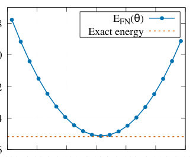
<figcaption class="paper-figure-caption"><b>Fig 2.</b> Figure 1 displays the fixed-node energy as a function of the nodal position θFN; the exact energy is indicated by the horizontal line. As expected from the variational principle[12], the fixed-node energy is above the exact energy and reaches its minimum when the angle equals the exact value. This exact angle, denoted as θex, is in full agreement with the node obtained independently from the exact wave function computed in the ϕk Fourier basis set. We stress again that this node (and its image under inversion) cannot be inferred from symmetry alone: as in realistic fermionic systems, it depends on the specific form of the potential and requires solving the Schr¨odinger equation. A useful...</figcaption>
</figure>
<figure class="paper-figure-card">

<figcaption class="paper-figure-caption"><b>Fig 3.</b> Figure 3. E(n) FN as a function of the number n of SHDMC iterations using the standard algorithm. The number of basis functions is N = 4.</figcaption>
</figure>
<figure class="paper-figure-card">
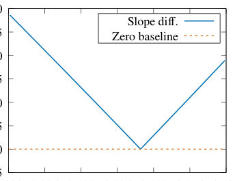
<figcaption class="paper-figure-caption"><b>Fig 4.</b> Figure 2. Slope difference of the fixed-node wavefunction as a function of θFN. The difference vanishes at the exact node, θex.</figcaption>
</figure>
<figure class="paper-figure-card">
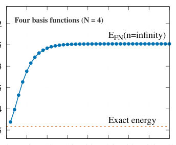
<figcaption class="paper-figure-caption"><b>Fig 5.</b> Figure 3 shows the evolution of the fixed-node energy as a function of the number n of SHDMC iterations when expanding the truncated fixed-node wavefunction, ψ(n) FN, over N = 4 functions, namely {ϕk}N=4 = {u1, v1, u3, v3}. Note that the coefficients associated with even-parity ba- sis functions vanish by symmetry. The fixed-node energy increases monotonically with the iteration number n and approaches for large n a plateau corresponding to a bi- ased energy. This behavior is observed for all values of</figcaption>
</figure>
</div>

<p><strong>Summary.</strong> This work provides a critical assessment of the Self-Healing Diffusion Monte Carlo (SHDMC) method when applied to fermionic systems. The authors demonstrate that the standard implementation fails to converge to the correct fixed-node energy due to systematic node deterioration. They propose and validate modifications, such as emphasizing the nodal region or using localized basis sets, which are necessary for achieving accurate results.</p>
<p><strong>Why it may be interesting.</strong> The rigorous analysis of convergence failure and the proposal of specific algorithmic fixes (like local basis sets) are highly relevant to developing robust numerical techniques for strongly correlated quantum systems.</p>
<details>
<summary>Detailed structure</summary>
<p><strong>Main problem.</strong> The paper critically assesses the Self-Healing Diffusion Monte Carlo (SHDMC) method for improving the nodal surface of fermionic wavefunctions.</p>
<p><strong>Main result.</strong> Standard SHDMC fails for the tested fermionic model, causing the fixed-node energy to increase monotonically; however, modifying the nodal update criterion or using localized basis sets can partially restore convergence.</p>
<p><strong>Method.</strong> The authors employ an iterative fixed-node calculation within the SHDMC framework, comparing standard criteria against modified local criteria and localized basis sets.</p>
<p><strong>Model / system.</strong> The study uses a one-dimensional model with periodic boundary conditions, incorporating an inversion symmetry to mimic the nodal structure of fermionic wavefunctions.</p>
<p><strong>Key observables.</strong> Fixed-node energy ($E_{FN}$), nodal convergence (node position $    heta_N$), and the stability index ($\eta$).</p>
<p><strong>Important parameters / regimes.</strong> The degree of nodal constraint ($\epsilon$) and the choice of basis set (Fourier vs. localized).</p>
<p><strong>Assumptions / limitations.</strong> The primary assumption is that the nodal structure can be iteratively optimized using the SHDMC procedure, which is shown to be conditionally true.</p>
<p><strong>Figures summary.</strong> Figures illustrate the monotonic increase of $E_{FN}$ under standard SHDMC, and show that modified criteria or localized bases allow the node position to converge toward the correct physical value.</p>
<p><strong>Paper structure.</strong> The paper progresses by first establishing the failure of standard SHDMC, then proposing and testing a modification focusing on the nodal region, and finally demonstrating improved convergence using localized basis sets.</p>
</details>
<details>
<summary>Abstract</summary>
<p>We investigate the Self-Healing Diffusion Monte Carlo (SHDMC) method using a one-dimensional model with periodic boundary conditions. An inversion symmetry is introduced to mimic the antisymmetry property of fermionic wavefunctions, with the bosonic and fermionic sectors being modeled by the even and odd eigenstates, respectively. As in realistic fermionic systems, the nodal structure is only partially constrained by symmetry, making this model a non-trivial testbed for nodal optimization algorithms such as SHDMC. We show that the nodal evolution under SHDMC iterations can be cast into a dynamical system exhibiting both attractive and repulsive fixed points. In the standard formulation of SHDMC applied to this model, the fixed-node energy is found to increase upon iteration, and the node converges to a wrong value, indicating that SHDMC does not always converge to the correct solution. We further show that this problem is partially cured by modifying the nodal update criterion to give more importance to the nodal region. Achieving convergence in the general case very likely requires the use of a localized basis set, as is the case for this model.</p>
</details>
<p><sub><a href="#top">↑ back to top</a></sub></p>

<p><a id="paper-2609.00349"></a></p>
<h3 id="symmetry-reduced-variational-quantum-simulation-of-the-math607math-quantum-phase-transition-in-the-interacting-boson-model"><a href="http://arxiv.org/abs/2609.00349v1">Symmetry-Reduced Variational Quantum Simulation of the $U(5)\rightarrow SU(3)$ Quantum Phase Transition in the Interacting Boson Model</a></h3>
<p><strong>Authors:</strong> Faisal Etminan<br>
<strong>Type:</strong> theory · <strong>Category:</strong> statistical mechanics · <strong>PDF:</strong> <a href="https://arxiv.org/pdf/2609.00349v1">https://arxiv.org/pdf/2609.00349v1</a><br>
<strong>Analysis basis:</strong> full PDF text, analyzed in chunks
<strong>Topic relevance:</strong> <code>analog quantum simulation</code> <strong>1/5</strong></p>
<div class="figure-strip-hint">↔ Scroll figures horizontally</div>
<div class="paper-figures-scroll">
<figure class="paper-figure-card">
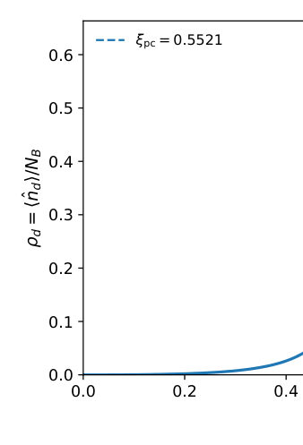
<figcaption class="paper-figure-caption"><b>Fig 1.</b> FIG. 1: Normalized d-boson occupation ρd = ⟨ˆnd⟩/NB as a function of the control</figcaption>
</figure>
<figure class="paper-figure-card">
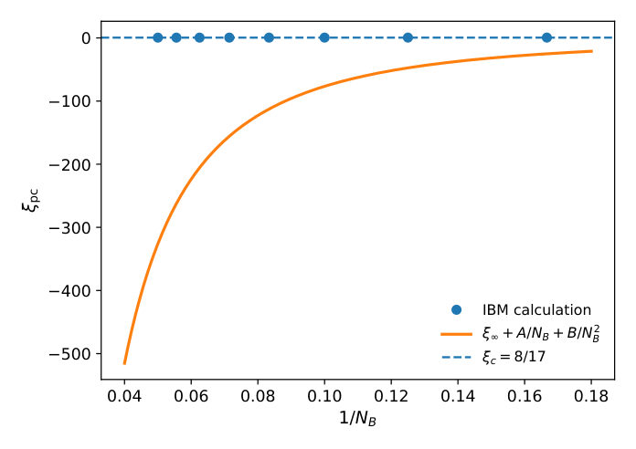
<figcaption class="paper-figure-caption"><b>Fig 2.</b> FIG. 2: Finite-size evolution of the pseudocritical point ξpc as a function of inverse boson</figcaption>
</figure>
<figure class="paper-figure-card">
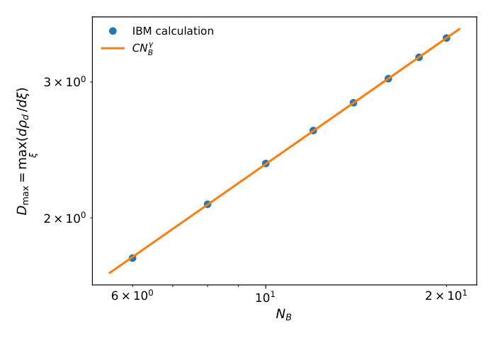
<figcaption class="paper-figure-caption"><b>Fig 3.</b> FIG. 3: Maximum response of the order parameter, Dmax = maxξ[dρd/dξ], as a function of</figcaption>
</figure>
<figure class="paper-figure-card">
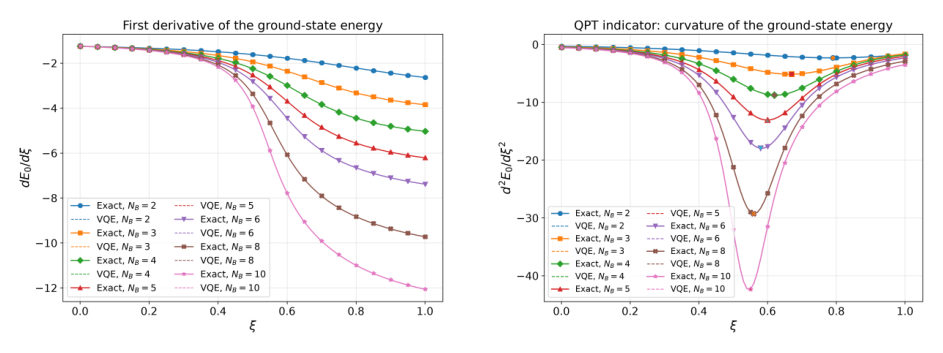
<figcaption class="paper-figure-caption"><b>Fig 4.</b> FIG. 4: Finite-size evolution of the U(5) →SU(3) quantum phase transition in the IBM.</figcaption>
</figure>
<figure class="paper-figure-card">
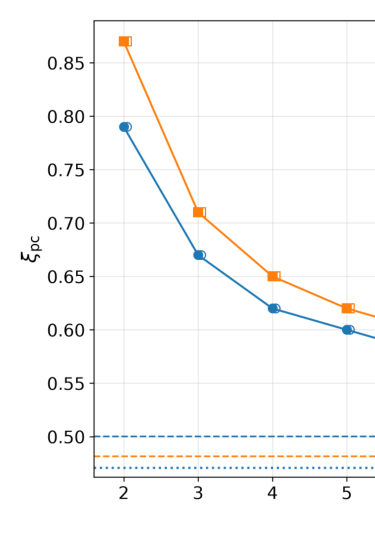
<figcaption class="paper-figure-caption"><b>Fig 5.</b> FIG. 5: Finite-NB pseudocritical indicators ξE and ξρ obtained from the energy and</figcaption>
</figure>
</div>

<p><strong>Summary.</strong> This work uses a symmetry-reduced Variational Quantum Eigensolver (VQE) to study the quantum phase transition in the Interacting Boson Model. By analyzing finite-size scaling of order parameters, the authors demonstrate that the VQE approach can efficiently and accurately simulate this transition, confirming theoretical predictions for the critical point.</p>
<p><strong>Why it may be interesting.</strong> The application of quantum simulation techniques (VQE) to model a well-established nuclear structure model (IBM) provides a concrete testbed for quantum algorithms in condensed matter/nuclear physics, particularly for studying phase transitions.</p>
<details>
<summary>Detailed structure</summary>
<p><strong>Main problem.</strong> The paper investigates the quantum phase transition from the spherical $U(5)$ limit to the deformed $SU(3)$ limit within the Interacting Boson Model (IBM).</p>
<p><strong>Main result.</strong> The symmetry-reduced Variational Quantum Eigensolver (VQE) successfully simulates the QPT, reproducing structural observables and approaching the analytically predicted critical point $\xi_c = 8/17$.</p>
<p><strong>Method.</strong> The study employs a symmetry-preserving, minimum-qubit VQE framework combined with finite-size scaling and thermodynamic-limit extrapolation techniques.</p>
<p><strong>Model / system.</strong> The system is the Interacting Boson Model (IBM), which describes the low-lying collective states of even-even nuclei. The Hamiltonian is parameterized by control variables $\xi$ and $\chi$.</p>
<p><strong>Key observables.</strong> Normalized d-boson occupation ($\rho_d$) used as the primary order parameter, ground-state energy ($E_0$), and quadrupole collectivity ($ ext{CQ}$).</p>
<p><strong>Important parameters / regimes.</strong> Control parameters $\xi$ and $\chi$; the critical point $\xi_c = 8/17 \approx 0.470588$.</p>
<p><strong>Assumptions / limitations.</strong> The primary assumption is that symmetry reduction based on rotational invariance is valid for minimizing qubits while preserving the finite-size physics of the QPT.</p>
<p><strong>Figures summary.</strong> Figures compare VQE results against exact diagonalization benchmarks, showing convergence of finite-size indicators toward the analytic critical point $\xi_c$.</p>
<p><strong>Paper structure.</strong> The paper establishes the IBM Hamiltonian, develops a symmetry-reduced VQE workflow, benchmarks this method against exact diagonalization results, and analyzes the finite-size scaling of order parameters to extrapolate the true thermodynamic critical point.</p>
</details>
<details>
<summary>Abstract</summary>
<p>The spherical-to-deformed quantum phase transition of the Interacting Boson Model (IBM) is investigated using the variational quantum eigensolver (VQE). The $U(5)$--$SU(3)$ transitional Hamiltonian is studied with $χ=-\sqrt{7}/2$. We develop a symmetry-preserving, minimum-qubit VQE framework for collective nuclear models, achieving a substantial reduction in qubit requirements without compromising the finite-size quantum-phase-transition physics. The transition is characterized through the normalized $d$-boson occupation and ground-state energy derivatives. Finite-size results are found to approach the analytic critical point $ξ_c=8/17\simeq0.470588$, with an independent order-parameter extrapolation yielding $ξ_\infty=0.46986(61)$. The VQE reproduces ground-state energies and structural observables to numerical precision. These results demonstrate the potential of symmetry-reduced VQE for efficient quantum simulations of collective nuclear dynamics and quantum phase transitions.</p>
</details>
<p><sub><a href="#top">↑ back to top</a></sub></p>

<p><a id="paper-2609.01448"></a></p>
<h3 id="verifiable-quantum-advantage-in-extremely-low-depth"><a href="http://arxiv.org/abs/2609.01448v1">Verifiable quantum advantage in extremely low depth</a></h3>
<p><strong>Authors:</strong> Alexandru Gheorghiu<br>
<strong>Type:</strong> theory · <strong>Category:</strong> quantum information and computing · <strong>PDF:</strong> <a href="https://arxiv.org/pdf/2609.01448v1">https://arxiv.org/pdf/2609.01448v1</a><br>
<strong>Analysis basis:</strong> full PDF text, analyzed in chunks
<strong>Topic relevance:</strong> <code>quantum measurements</code> <strong>1/5</strong></p>
<div class="figure-strip-hint">↔ Scroll figures horizontally</div>
<div class="paper-figures-scroll">
<figure class="paper-figure-card">
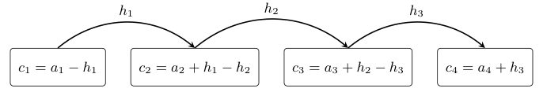
<figcaption class="paper-figure-caption"><b>Fig 1.</b> Fig. 1. The path-mask encoding of the sum a1 + a2 + a3 + a4 modulo q, for t = 4. The symbols form a path, and the mask hj lives on the j-th edge: it moves a random amount from position j to position j + 1, subtracted from cj and added to cj+1. Summing along the path cancels every mask and returns the sum.</figcaption>
</figure>
</div>

<p><strong>Summary.</strong> This paper constructs a sampling problem that proves quantum advantage using quantum circuits with remarkably low depth ($\log \log \lambda$ or constant). It achieves this by adapting existing lattice-based proofs of quantumness, requiring only shallow circuit execution and sampling, which is a significant step toward practical quantum cryptography demonstrations.</p>
<p><strong>Why it may be interesting.</strong> This work pushes the boundary of quantum complexity theory by demonstrating that quantum advantage can be shown using extremely shallow circuits, which is highly relevant for near-term quantum hardware feasibility.</p>
<details>
<summary>Detailed structure</summary>
<p><strong>Main problem.</strong> To construct a sampling problem that is solvable by extremely shallow quantum circuits, computationally hard for classical algorithms based on lattice assumptions, and efficiently verifiable.</p>
<p><strong>Main result.</strong> The authors provide constructions showing that quantum advantage can be demonstrated using circuits of depth $O(\log \log \lambda)$ or even constant depth ($QAC^0$), without requiring mid-circuit measurements.</p>
<p><strong>Method.</strong> The work compiles existing lattice-based proofs of quantumness (like those from Arabadjieva et al.) into low-depth quantum circuits, framing the problem as a challenge-response protocol.</p>
<p><strong>Model / system.</strong> The model involves quantum circuits operating on qubits, specifically analyzing the capabilities of shallow circuits defined by $QNC^0[\log \log]$ or $QAC^0$ gate sets. The underlying hardness relies on the Learning with Errors (LWE) problem.</p>
<p><strong>Key observables.</strong> Acceptance probability of the quantum sampler, the depth of the required quantum circuit, and the computational advantage over classical samplers.</p>
<p><strong>Important parameters / regimes.</strong> Circuit depth ($\log \log \lambda$ or constant), security parameter ($\lambda$), and the lattice knowledge assumption strength ($ ext{LK-}1/4$).</p>
<p><strong>Assumptions / limitations.</strong> The construction relies on non-standard assumptions, including a strengthened variant of the adaptive-hardcore-bit property of LWE and the $ ext{LK-}1/4$ assumption.</p>
<p><strong>Figures summary.</strong> The notes refer to a table comparing various quantum advantage protocols based on depth, measurements, and fan-out/fan-in, indicating the current work improves these metrics.</p>
<p><strong>Paper structure.</strong> The paper builds upon previous work (BCMVV, AGGM) by focusing on reducing the circuit depth. It establishes the necessary quantum sampling problem and proves the existence of polynomial-size quantum circuits achieving the desired low depth while maintaining classical hardness.</p>
</details>
<details>
<summary>Abstract</summary>
<p>We give a sampling problem that is solvable by shallow quantum circuits, hard for polynomial-time classical algorithms under lattice-based assumptions, and efficiently verifiable by a classical computer. The quantum sampler admits two implementations: one uses log-logarithmic-depth quantum circuits with one- and two-qubit gates, i.e., $\mathsf{QNC}^0[\log\log]$ circuits, while the other uses constant-depth quantum circuits with unbounded fan-in gates, i.e., $\mathsf{QAC}^0$ circuits. Our construction can be seen as compiling the Learning with Errors (LWE)-based single-round proof of quantumness of Arabadjieva et al. (2025) to very low depth. The price paid for this compilation is the reliance on less standard, though well-motivated, assumptions: in addition to the lattice knowledge assumption used by Arabadjieva et al. (2025), we require a strengthened variant of the adaptive-hardcore-bit property of LWE, for which we provide supporting evidence. Unlike previous low-depth proofs of quantumness, the quantum computation here requires no mid-circuit measurements or feed-forward: it consists only of running a shallow circuit and sampling from its output distribution. This shows that shallow quantum circuits have sufficient structure to solve certain classically hard tasks whose solutions can be verified efficiently.</p>
</details>
<p><sub><a href="#top">↑ back to top</a></sub></p>
<h2 id="other-papers-21">Other papers (21)</h2>
<p><em>Papers from primary archives without highlighted authors or any topic match. Click to expand.</em></p>
<details>
<summary>Show other papers</summary>

<p><a id="paper-2609.00489"></a></p>
<h3 id="a-hybrid-quantum-classical-neural-network-for-learning-to-route"><a href="http://arxiv.org/abs/2609.00489v1">A hybrid quantum-classical neural network for learning to route</a></h3>
<p><strong>Authors:</strong> Marcus Rolf Peter Ritt, Alexsandro Santos da Rosa Júnior, Marcos Vinicius Reballo, Cesar Augusto do Amaral, Fernando Augusto Caletti de Barros<br>
<strong>Type:</strong> both · <strong>Category:</strong> disordered systems and neural networks · <strong>PDF:</strong> <a href="https://arxiv.org/pdf/2609.00489v1">https://arxiv.org/pdf/2609.00489v1</a><br>
<strong>Analysis basis:</strong> full PDF text, analyzed in chunks</p>
<div class="figure-strip-hint">↔ Scroll figures horizontally</div>
<div class="paper-figures-scroll">
<figure class="paper-figure-card">
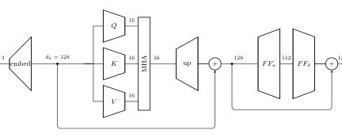
<figcaption class="paper-figure-caption"><b>Fig 1.</b> Fig. 1. Encoder architecture of the classical attention model. The figure shows the node embedding and one layer of a total of L layers.</figcaption>
</figure>
<figure class="paper-figure-card">
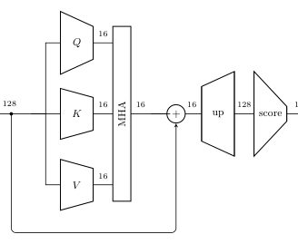
<figcaption class="paper-figure-caption"><b>Fig 2.</b> Fig. 2. Decoder architecture of the classical attention model.</figcaption>
</figure>
<figure class="paper-figure-card">
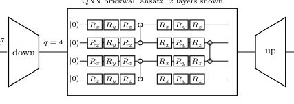
<figcaption class="paper-figure-caption"><b>Fig 3.</b> Fig. 3. Hybrid replacement of the encoder feed-forward block.</figcaption>
</figure>
</div>
<p><strong>Summary.</strong> This paper investigates using hybrid quantum-classical neural networks to solve the CVRP, aiming to replace large, parameter-heavy classical modules with compact Quantum Neural Networks (QNNs). The authors successfully show that this replacement significantly reduces model size while maintaining competitive solution quality compared to classical baselines, suggesting a viable compression strategy for neural combinatorial optimization.</p>
<p><strong>Why it may be interesting.</strong> The work demonstrates a practical application of quantum circuits to compress and accelerate components within complex machine learning models used for combinatorial optimization, which is a key area of ML-physics intersection.</p>
<details>
<summary>Detailed structure</summary>
<p><strong>Main problem.</strong> The paper addresses the challenge of learning to solve the strongly NP-hard Capacitated Vehicle Routing Problem (CVRP) using machine learning models.</p>
<p><strong>Main result.</strong> Replacing a parameter-heavy feed-forward module in a classical attention-based routing network with a small Quantum Neural Network (QNN) successfully reduces model parameters by 56.6% while maintaining solution quality close to the classical baseline for small to medium instances.</p>
<p><strong>Method.</strong> The authors employ a hybrid quantum-classical neural network trained via the REINFORCE algorithm to optimize routing heuristics for the CVRP.</p>
<p><strong>Model / system.</strong> The problem is modeled using an arc-based integer programming formulation for CVRP. The proposed model is a hybrid network where the classical encoder's feed-forward block is replaced by a variational QNN circuit utilizing rotations and CNOT gates.</p>
<p><strong>Key observables.</strong> Objective value (route length), average relative deviation ($r_m$), and total evaluation time ($t$) when solving CVRP instances of size $n \in \{10, 20, 50, 100\}$.</p>
<p><strong>Important parameters / regimes.</strong> The QNN uses a small configuration ($q=4$ qubits, $L_q=2$ layers), and performance is tested across varying instance sizes ($n$).</p>
<p><strong>Assumptions / limitations.</strong> The primary limitation noted is that the performance gap between the hybrid model and the classical baseline grows for larger instances, and the comparison does not prove quantum advantage over classical heuristics.</p>
<p><strong>Figures summary.</strong> Figures illustrate the encoder and decoder architectures of the classical model, and Figure 3 details the integration of the QNN to replace the feed-forward block.</p>
<p><strong>Paper structure.</strong> The paper introduces the CVRP as the optimization problem, details the classical attention model, proposes the hybrid QNN replacement strategy in the encoder, trains and tests the model on varying instance sizes, and concludes by comparing performance against classical solvers.</p>
</details>
<details>
<summary>Abstract</summary>
<p>This work studies hybrid quantum-classical neural networks for learning routing heuristics. Specifically, this paper asks whether small quantum neural networks can replace parameter-heavy modules inside a competitive attention-based routing model while maintaining solution quality. For the capacitated vehicle routing problem, encoder feed-forward replacement emerges as the most promising design: it reduces the number of model parameters by 56.6% while keeping the hybrid model close to the classical neural baseline at small and medium instance sizes, although the gap grows for larger instances. This work also compares to classical routing algorithms, which remain highly competitive and often superior on the fixed Euclidean test sets. Our results therefore do not indicate quantum advantage or solver dominance, but identify encoder feed-forward replacement as a viable hybrid-module compression strategy for neural combinatorial optimization.</p>
</details>
<p><sub><a href="#top">↑ back to top</a></sub></p>

<p><a id="paper-2609.01451"></a></p>
<h3 id="behavioral-memory-under-symmetry-in-one-way-quantum-automata"><a href="http://arxiv.org/abs/2609.01451v1">Behavioral Memory under Symmetry in One-Way Quantum Automata</a></h3>
<p><strong>Authors:</strong> Zeyu Chen<br>
<strong>Type:</strong> theory · <strong>Category:</strong> quantum information and computing · <strong>PDF:</strong> <a href="https://arxiv.org/pdf/2609.01451v1">https://arxiv.org/pdf/2609.01451v1</a><br>
<strong>Analysis basis:</strong> full PDF text, analyzed in chunks</p>
<div class="figure-strip-hint">↔ Scroll figures horizontally</div>
<div class="paper-figures-scroll">
<figure class="paper-figure-card">
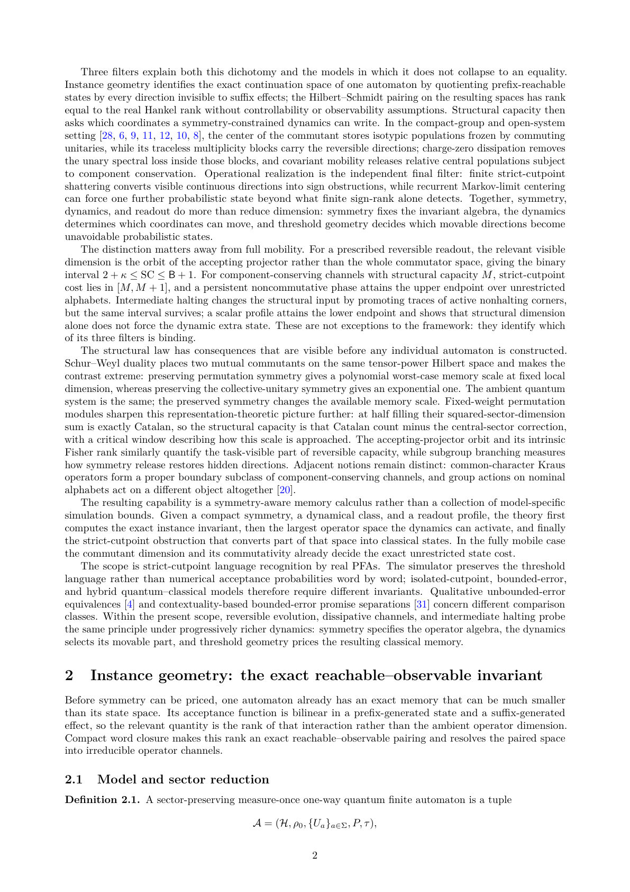
<figcaption class="paper-figure-caption"><b>Fig 1.</b> Low-resolution page preview, page 2</figcaption>
</figure>
<figure class="paper-figure-card">
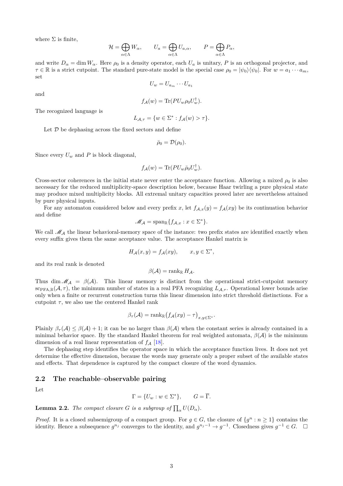
<figcaption class="paper-figure-caption"><b>Fig 2.</b> Low-resolution page preview, page 3</figcaption>
</figure>
<figure class="paper-figure-card">
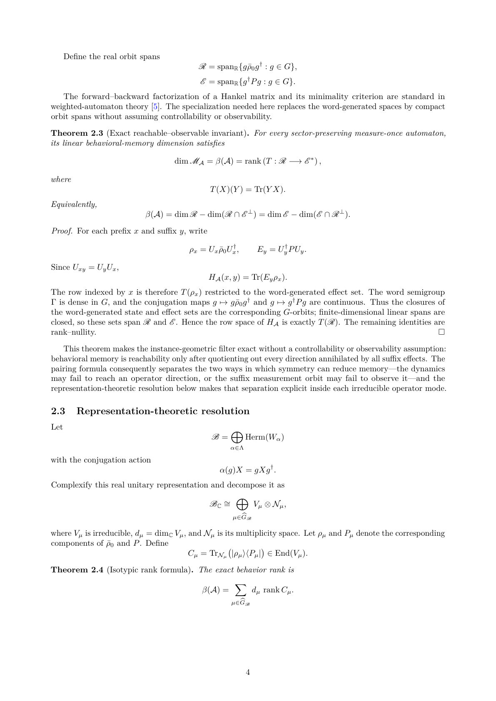
<figcaption class="paper-figure-caption"><b>Fig 3.</b> Low-resolution page preview, page 4</figcaption>
</figure>
<figure class="paper-figure-card">
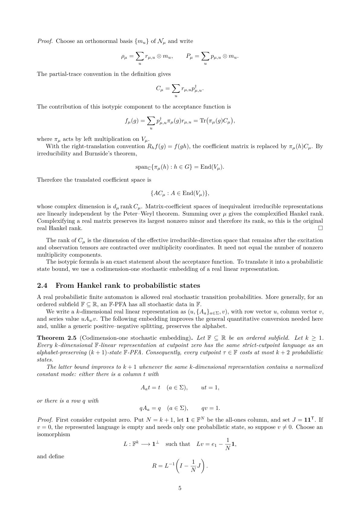
<figcaption class="paper-figure-caption"><b>Fig 4.</b> Low-resolution page preview, page 5</figcaption>
</figure>
<figure class="paper-figure-card">
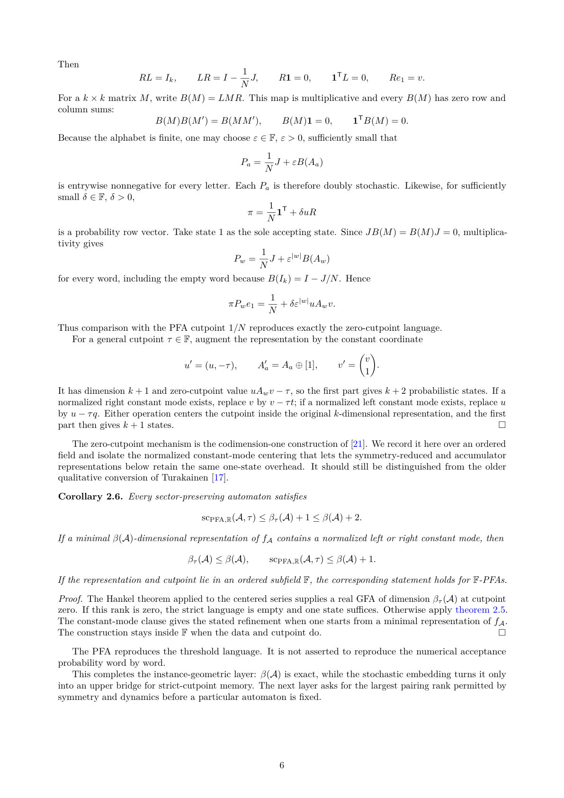
<figcaption class="paper-figure-caption"><b>Fig 5.</b> Low-resolution page preview, page 6</figcaption>
</figure>
</div>
<p><strong>Summary.</strong> This theoretical paper analyzes the memory capacity of one-way quantum automata under symmetry constraints using advanced operator algebra. It develops a framework that quantifies memory by analyzing the rank of associated Hankel matrices and decomposes the system's dynamics into components related to symmetry. The key finding is that noncommutativity imposes a quantifiable, one-state penalty on the worst-case computational cost.</p>
<p><strong>Why it may be interesting.</strong> The rigorous connection drawn between algebraic structure (commutativity) and computational cost (state cost) provides a powerful, general framework for understanding resource limitations in quantum computation models.</p>
<details>
<summary>Detailed structure</summary>
<p><strong>Main problem.</strong> The paper aims to develop an operator-algebraic theory to characterize the 'behavioral memory' of one-way quantum automata when subjected to compact symmetry constraints.</p>
<p><strong>Main result.</strong> It establishes a sharp dichotomy where noncommutativity in the invariant algebra raises the worst-case classical cost by exactly one state, and it relates memory capacity to structural properties like the commutant's center and multiplicity blocks.</p>
<p><strong>Method.</strong> The authors employ operator-algebraic techniques, defining behavior via the Hilbert-Schmidt pairing and analyzing the rank of the acceptance Hankel matrix, $eta(A)$.</p>
<p><strong>Model / system.</strong> The model is the one-way quantum automaton, whose evolution and memory are captured by an acceptance function $f_A(w)$ and analyzed through its associated operator algebra.</p>
<p><strong>Key observables.</strong> Behavioral Memory ($eta(A)$), Operational Strict-Cutpoint Memory ($ ext{scPFA},_R(A,    au)$), and the rank of the acceptance Hankel matrix.</p>
<p><strong>Important parameters / regimes.</strong> The structure of the symmetry commutant, the dimension of the invariant algebra, and the state cost associated with commutativity vs. noncommutativity.</p>
<p><strong>Assumptions / limitations.</strong> The analysis focuses on the scope of strict-cutpoint language recognition by real PFAs, and the theory distinguishes between different comparison classes of quantum channels.</p>
<p><strong>Paper structure.</strong> The paper progresses by defining the memory measure using Hankel matrices, deriving an exact formula for the linear memory dimension via isotypic decomposition, and then analyzing the structural cost implications based on the algebraic properties (commutativity vs. noncommutativity) of the symmetry-constrained invariant algebra.</p>
</details>
<details>
<summary>Abstract</summary>
<p>Under compact symmetry, observable behavior reduces to an invariant operator algebra, but its dimension is not yet classical memory: some coordinates are dynamically frozen, some invisible to threshold tests, and some already classical. We develop an operator-algebraic theory that separates these effects through three filters. For one automaton, behavior is the Hilbert--Schmidt pairing between prefix-reachable states and suffix-observable effects, whose rank equals the real Hankel rank without controllability or observability assumptions. Maximizing this invariant over a symmetry-constrained dynamical class gives a structural capacity controlled by the symmetry commutant: its center stores isotypic populations frozen by reversible dynamics, its traceless multiplicity blocks carry movable noncommutative coordinates, dissipation removes the unary spectral loss inside those blocks, and covariant mobility releases relative populations subject to component conservation. Operational realization then determines which surviving coordinates force probabilistic states. For a fixed nontrivial invariant readout, full mobility gives an exact dichotomy in worst-case state cost: a commutative invariant algebra costs exactly its dimension, whereas a noncommutative multiplicity block raises the unrestricted cost by exactly one state. Thus noncommutativity has a one-state worst-case classical price. The known four-letter quadratic-plus-one law at trivial symmetry is the fully mobile endpoint of this principle. Schur--Weyl duality further shows that different preserved symmetries on the same tensor-power Hilbert space can change the worst memory scale from polynomial to exponential, while fixed-weight modules give an exact Catalan law at half filling, with structural capacity equal to the Catalan count minus its central-sector correction.</p>
</details>
<p><sub><a href="#top">↑ back to top</a></sub></p>

<p><a id="paper-2609.00122"></a></p>
<h3 id="classification-of-rational-math643math-vertex-operator-algebras-and-vertex-operator-superalgebras"><a href="http://arxiv.org/abs/2609.00122v1">Classification of Rational $c=1$ Vertex Operator Algebras and Vertex Operator Superalgebras</a></h3>
<p><strong>Authors:</strong> Terry Gannon, Brandon C. Rayhaun<br>
<strong>Type:</strong> theory · <strong>Category:</strong> other · <strong>PDF:</strong> <a href="https://arxiv.org/pdf/2609.00122v1">https://arxiv.org/pdf/2609.00122v1</a><br>
<strong>Analysis basis:</strong> full PDF text, analyzed in chunks</p>
<div class="figure-strip-hint">↔ Scroll figures horizontally</div>
<div class="paper-figures-scroll">
<figure class="paper-figure-card">
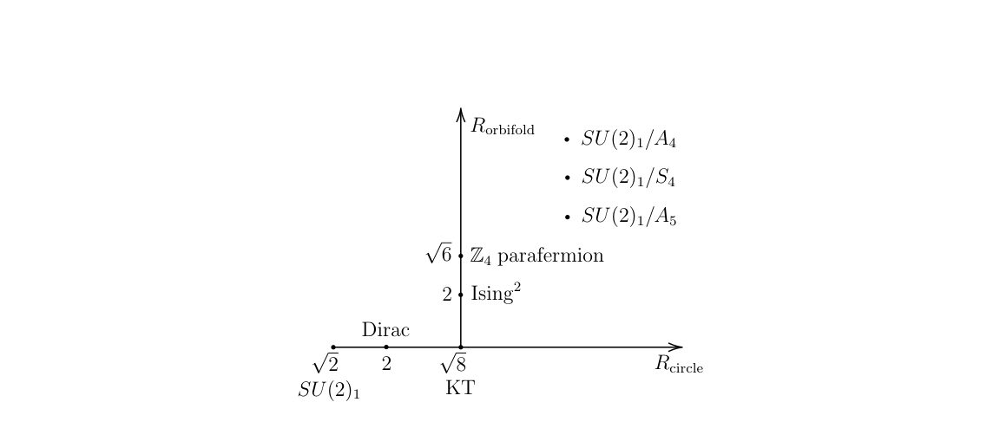
<figcaption class="paper-figure-caption"><b>Fig 1.</b> Figure 1: The (conjecturally complete) conformal moduli space of unitary 2D CFTs with compact spectrum and central charge c = 1.</figcaption>
</figure>
<figure class="paper-figure-card">
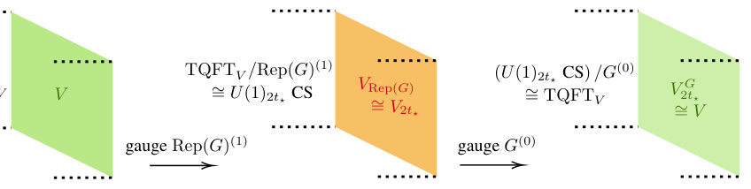
<figcaption class="paper-figure-caption"><b>Fig 2.</b> Figure 2: A physical interpretation of our proof of the classification of nice c = 1 chiral algebras. We argue that any such chiral algebra V occurs on the boundary of a TQFT whose spinless anyons generate a Rep(G) one-form symmetry. When Rep(G) is gauged, the bulk goes over to U(1)2t⋆ Chern-Simons theory for some square-free t⋆, and the boundary goes over to the free chiral boson theory V2t⋆. This bulk/boundary theory inherits a dual/quantum G zero-form symmetry which, on the one hand, “undoes” the Rep(G) gauging and, on the other, has the effect of projecting the local operators on the boundary to the G-invariant subalgebra V G 2t⋆. Thus, every nice c = 1 chiral algebra V is of the form V...</figcaption>
</figure>
<figure class="paper-figure-card">
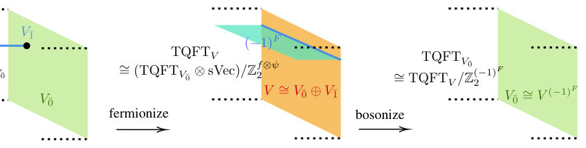
<figcaption class="paper-figure-caption"><b>Fig 3.</b> Figure 3: The bulk TQFT supporting V¯0 on its boundary is assumed to have a fermionic anyon f. The boundary local operators on which it terminates belong to the Hilbert space V¯1. Fermionizing entails stacking with sVec, which has a transparent fermion ψ, and gauging the Z2 one-form symmetry generated by f ⊗ψ. The bulk after fermionizing is a spin TQFT, and the boundary is a fermionic chiral algebra V ∼= V¯0 ⊕V¯1. The fermionized theory has a fermion parity zero-form symmetry denoted (−1)F. Fermionization can be undone by bosonization, which entails gauging (−1)F. The effect on the boundary is to project out the operators which are odd under (−1)F.</figcaption>
</figure>
</div>
<p><strong>Summary.</strong> This paper rigorously classifies all 'nice' Vertex Operator Algebras and Superalgebras with central charge $c=1$. It proves that these algebras must arise either from rank-1 integral lattices or as orbifolds of such lattices. This classification has deep implications for understanding the chiral algebras that form the holomorphic sector of rational $c=1$ Conformal Field Theories.</p>
<p><strong>Why it may be interesting.</strong> While highly abstract, the rigorous classification of low-dimensional CFTs (like $c=1$) provides fundamental constraints on quantum field theories, which informs the understanding of boundary conditions and topological order relevant to quantum information.</p>
<details>
<summary>Detailed structure</summary>
<p><strong>Main problem.</strong> The paper aims to provide a mathematically rigorous classification of 'nice' $c=1$ Vertex Operator Algebras (VOAs) and Vertex Operator Superalgebras (VOSAs). Physically, this translates to classifying the chiral algebras arising in the holomorphic sector of rational $c=1$ Conformal Field Theories (CFTs).</p>
<p><strong>Main result.</strong> The classification states that any such VOA must be isomorphic to a lattice VOA ($ ext{V}<em 2m>L$) or an orbifold thereof ($ ext{V}_L^G$). The list includes specific examples like $    ext{V}</em>I$).}$ and three exceptional algebras ($  ext{V}T,    ext{V}O,    ext{V</p>
<p><strong>Method.</strong> The mathematical approach relies on showing that these VOAs are Tannakian, using criteria based on the vacuum character and the structure of simple modules. Physically, the classification is linked to viewing the VOA as the boundary theory of a 3D Topological Quantum Field Theory (TQFT).</p>
<p><strong>Model / system.</strong> The primary mathematical objects are $c=1$ VOAs/VOSAs. Physically, the context is the study of rational bosonic or fermionic CFTs, particularly those whose non-identity primaries have positive conformal dimension.</p>
<p><strong>Key observables.</strong> The vacuum character ($    ext{ch}_V(  au)$) and the function $P_V(	au)$ (related to modules with integer conformal dimension) are key diagnostic tools.</p>
<p><strong>Important parameters / regimes.</strong> The central charge $c=1$ is the defining parameter. The classification depends on the structure of the associated finite symmetry group $G$ and the lattice rank.</p>
<p><strong>Assumptions / limitations.</strong> The classification is restricted to 'nice' VOAs (strongly rational and pseudo-unitary). The full classification of CFTs is reserved for a companion paper.</p>
<p><strong>Figures summary.</strong> Figure 1 shows the conformal moduli space of unitary 2D CFTs with $c=1$. Figure 2 illustrates the physical proof sequence: TQFT $    o$ Chern-Simons theory $    o$ VOA boundary.</p>
<p><strong>Paper structure.</strong> The paper establishes the mathematical criterion for nice VOAs using the vacuum character, proving that they must be lattice VOAs or orbifolds. It then connects this structure to the physical realization as chiral algebras in $c=1$ CFTs, with the full classification of full CFTs deferred to a companion work.</p>
</details>
<details>
<summary>Abstract</summary>
<p>For mathematicians: In this first in a series of two papers, we give a mathematically rigorous classification of (sufficiently nice) $c=1$ vertex operator algebras (VOAs) and vertex operator superalgebras (VOSAs). We confirm the lore that any such VO(S)A is either a lattice VO(S)A $V_L$ associated to a rank-1 integral lattice $L$, or can be obtained as an orbifold thereof, i.e. a $G$-invariant subalgebra $V_L^G$ for some finite group $G$ of automorphisms. All such $G$ are known, allowing for an explicit enumeration of nice $c=1$ VO(S)As. A key ingredient in our approach is to establish a general criterion for nice VOAs, requiring knowledge only of the vacuum character, for testing when the simple modules with integer conformal dimension span a symmetric fusion subcategory which is braided tensor equivalent to $Rep(G)$. In our companion paper, we calculate the ribbon auto-equivalences of the representation categories of the nice $c=1$ VOAs, and leverage this to obtain the classification of nice bosonic and fermionic $c=1$ full conformal field theories.   For physicists: We rigorously classify the chiral algebras that can arise in the holomorphic sector of a bosonic or fermionic rational $c=1$ conformal field theory (CFT) whose non-identity primaries all have positive conformal dimension. Thinking of chiral algebras as gapless boundary conditions of 3D topological quantum field theories (TQFTs), our result says that any such chiral algebra is either a holomorphic boundary of $U(1)_k$ Chern-Simons theory, or can be obtained by passing to the $G$-invariant states thereof for some finite group $G$ of symmetries. We explicitly enumerate these chiral algebras and also discuss their non-invertible symmetries. In a companion paper, we build on these results using techniques from the study of 3D TQFTs to classify full bosonic and fermionic rational $c=1$ CFTs.</p>
</details>
<p><sub><a href="#top">↑ back to top</a></sub></p>

<p><a id="paper-2609.00234"></a></p>
<h3 id="codes-for-quantum-secret-sharing-with-a-helper"><a href="http://arxiv.org/abs/2609.00234v1">Codes for Quantum Secret Sharing with a Helper</a></h3>
<p><strong>Authors:</strong> Eric Chitambar, Sarah Hagen, David W. Kribs, Zhao Ma, Mike I. Nelson, Andrew Nemec<br>
<strong>Type:</strong> theory · <strong>Category:</strong> quantum information and computing · <strong>PDF:</strong> <a href="https://arxiv.org/pdf/2609.00234v1">https://arxiv.org/pdf/2609.00234v1</a><br>
<strong>Analysis basis:</strong> full PDF text, analyzed in chunks</p>
<div class="figure-strip-hint">↔ Scroll figures horizontally</div>
<div class="paper-figures-scroll">
<figure class="paper-figure-card">
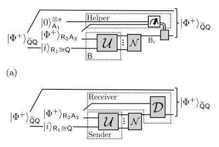
<figcaption class="paper-figure-caption"><b>Fig 1.</b> FIG. 2: (a) Blind LOCC-adressable helper codes use classical information sent from the helper to Bi to recover quantum information. This is similar to how classical information can sometimes be used in the decoding D of EA-codes (b). However, the helper’s system more closely resembles that of the receiver in an entanglement-assisted code: both hold a correctable set of qubits.</figcaption>
</figure>
</div>
<p><strong>Summary.</strong> This paper provides a deep structural analysis of Quantum Secret Sharing codes featuring a 'helper' party. It characterizes these codes, particularly the 'blind helper' type, by deriving necessary and sufficient conditions based on stabilizer theory. The work proves that for single-qubit secrets, recovery is always achievable using LOCC from the helper, advancing the theory of quantum information security.</p>
<p><strong>Why it may be interesting.</strong> The rigorous mathematical characterization of information access structures (like helper codes) is fundamental to quantum cryptography and secure quantum computation protocols.</p>
<details>
<summary>Detailed structure</summary>
<p><strong>Main problem.</strong> The paper analyzes the general structure of Quantum Secret Sharing (QSS) codes, specifically focusing on the unique constraints imposed by the 'helper' access structure.</p>
<p><strong>Main result.</strong> It fully characterizes blind helper stabilizer codes for single qubits, showing that recovery is always possible via one-way LOCC from the helper to the target party.</p>
<p><strong>Method.</strong> The analysis employs stabilizer formalism, deriving necessary and sufficient conditions for helper codes, and comparing structural constraints derived from information theory and quantum error correction principles.</p>
<p><strong>Model / system.</strong> The model is pure QSS schemes where a secret is encoded into a subspace of a multipartite system. The focus is on stabilizer codes, which are defined by commuting Pauli operators on the shared qubits.</p>
<p><strong>Key observables.</strong> The possibility of recovery via Local Operations and Classical Communication (LOCC), and the structure of the logical operators supporting the secret.</p>
<p><strong>Important parameters / regimes.</strong> The number of parties ($n$), the size of the secret ($k=1$ qubit), and the structure of the access set $\Gamma$.</p>
<p><strong>Assumptions / limitations.</strong> The analysis focuses on pure QSS schemes using isometric encoding, and initial results are derived for stabilizer codes.</p>
<p><strong>Figures summary.</strong> Figure 1 illustrates the recovery of maximal entanglement using information from an authorized subset of parties.</p>
<p><strong>Paper structure.</strong> The paper progresses by defining helper codes, reviewing error correction conditions, characterizing stabilizer codes using structural lemmas (e.g., Lemma 2 for blind helper codes), and finally deriving the general form of qubit helper codes.</p>
</details>
<details>
<summary>Abstract</summary>
<p>Helper quantum secret sharing is a form of secret sharing defined by its unique access structure. One special fixed party, called the helper, can work together with any other party to fully decode the secret. A blind helper is one who can provide this assistance while not holding any local information about the encoded secret. In this work, we analyze the general structure of QSS helper codes and present new code constructions. We fully characterize the structure of blind helper stabilizer codes and show that for the encoding of a single qubit, recovery is always possible using one-way local operations and classical communication (LOCC) from the helper to the targeted party. Furthermore, we demonstrate how such codes also allow for the helper to target larger subsets of parties by one-way LOCC, enabling them to be authorized to recover the secret. Finally, when each party only holds a qubit, we identify the general form of all helper codes (including non-stabilizer codes) and find that LOCC recovery is only possible in special cases.</p>
</details>
<p><sub><a href="#top">↑ back to top</a></sub></p>

<p><a id="paper-2609.01581"></a></p>
<h3 id="concentration-of-additive-functionals-of-stratonovich-type"><a href="http://arxiv.org/abs/2609.01581v1">Concentration of additive functionals of Stratonovich-type</a></h3>
<p><strong>Authors:</strong> Rick Bebon, Aljaž Godec, Angelika Rohde<br>
<strong>Type:</strong> theory · <strong>Category:</strong> statistical mechanics · <strong>PDF:</strong> <a href="https://arxiv.org/pdf/2609.01581v1">https://arxiv.org/pdf/2609.01581v1</a><br>
<strong>Analysis basis:</strong> full PDF text, analyzed in chunks</p>
<div class="figure-strip-hint">↔ Scroll figures horizontally</div>
<div class="paper-figures-scroll">
<figure class="paper-figure-card">
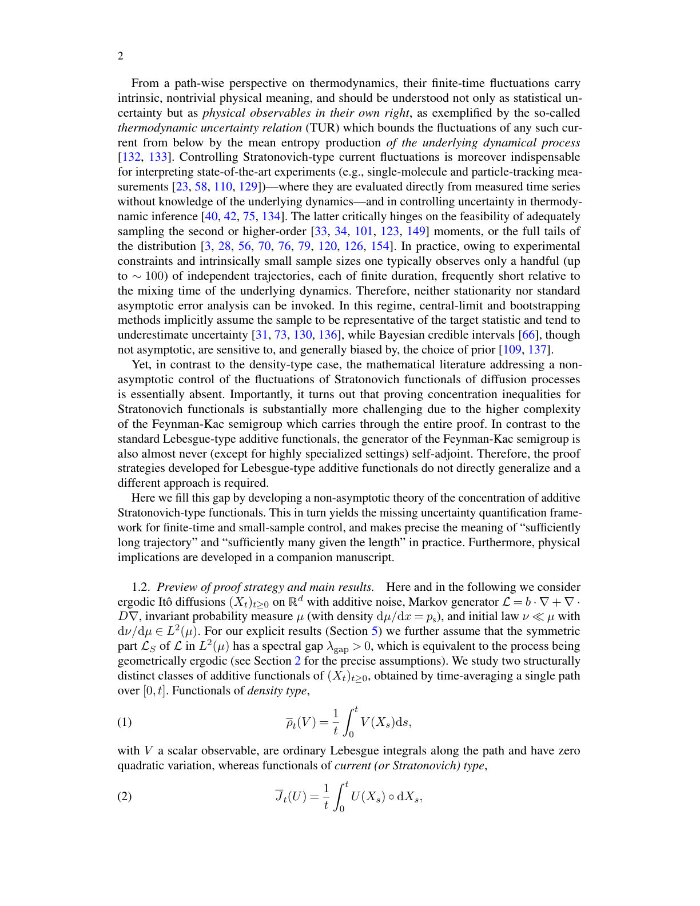
<figcaption class="paper-figure-caption"><b>Fig 1.</b> Low-resolution page preview, page 2</figcaption>
</figure>
<figure class="paper-figure-card">
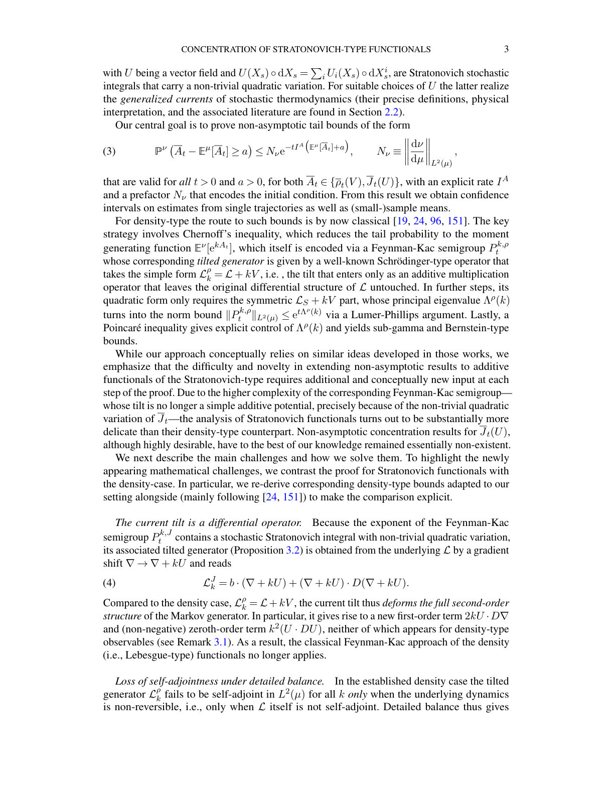
<figcaption class="paper-figure-caption"><b>Fig 2.</b> Low-resolution page preview, page 3</figcaption>
</figure>
<figure class="paper-figure-card">
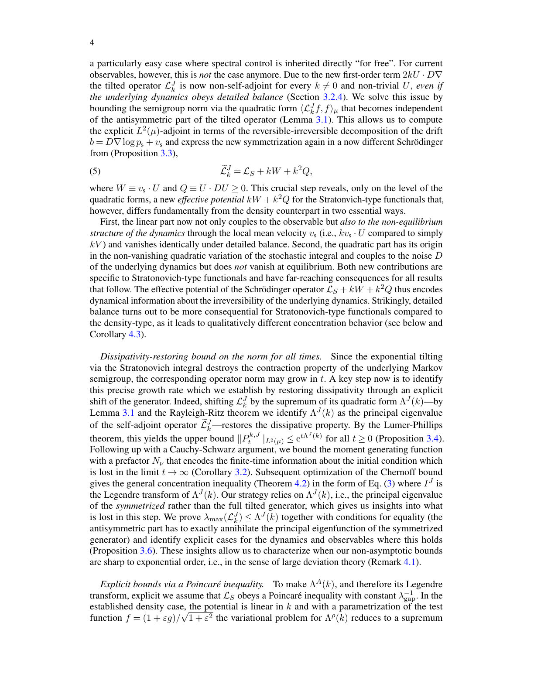
<figcaption class="paper-figure-caption"><b>Fig 3.</b> Low-resolution page preview, page 4</figcaption>
</figure>
<figure class="paper-figure-card">
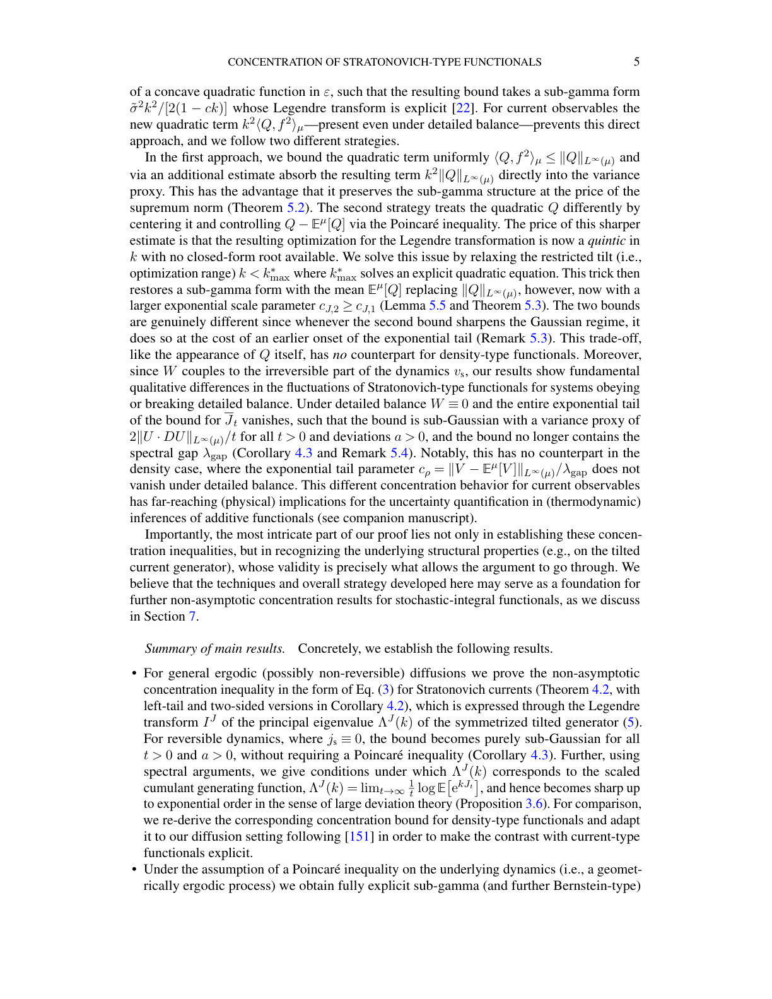
<figcaption class="paper-figure-caption"><b>Fig 4.</b> Low-resolution page preview, page 5</figcaption>
</figure>
<figure class="paper-figure-card">
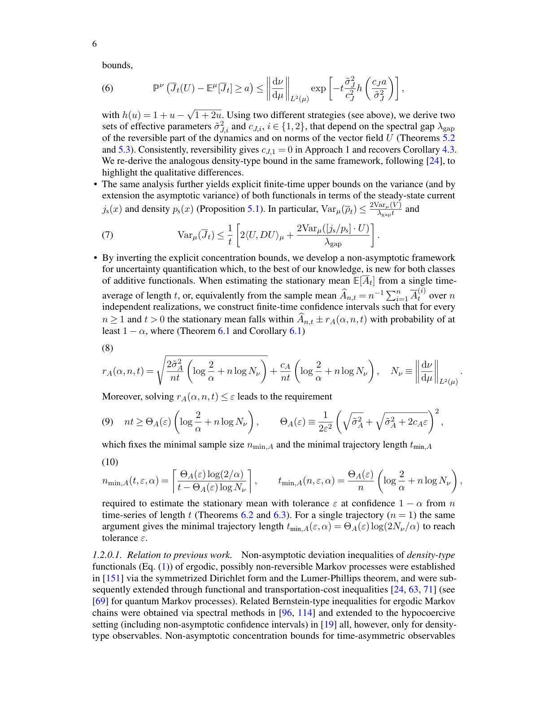
<figcaption class="paper-figure-caption"><b>Fig 5.</b> Low-resolution page preview, page 6</figcaption>
</figure>
</div>
<p><strong>Summary.</strong> This paper develops a rigorous, non-asymptotic theory for the concentration of additive functionals of Stratonovich-type, which are crucial for analyzing thermodynamic quantities along fluctuating paths. By employing a novel symmetrization technique, the authors overcome mathematical hurdles associated with non-self-adjoint generators. The results provide powerful, explicit concentration bounds, particularly highlighting a distinct sub-Gaussian behavior under detailed balance.</p>
<p><strong>Why it may be interesting.</strong> The rigorous mathematical treatment of path functionals like work or entropy production is central to modern non-equilibrium statistical mechanics, providing tools for quantifying fluctuations beyond simple averages.</p>
<details>
<summary>Detailed structure</summary>
<p><strong>Main problem.</strong> The paper tackles the challenging problem of proving non-asymptotic concentration inequalities for additive functionals of Stratonovich-type ($\mathcal{J}_t$) in the context of stochastic thermodynamics.</p>
<p><strong>Main result.</strong> They successfully prove concentration inequalities for $\mathcal{J}_t$ for general geometrically ergodic diffusion processes, notably showing that under detailed balance, the concentration is sub-Gaussian with a variance independent of the spectral gap.</p>
<p><strong>Method.</strong> The authors overcome the difficulty posed by the non-self-adjoint nature of the tilted generator by working with a symmetrized Dirichlet form and bounding the semigroup norm via the quadratic form.</p>
<p><strong>Model / system.</strong> The analysis applies to general geometrically ergodic diffusion processes ($X_s$) describing fluctuating paths in non-equilibrium statistical mechanics. The comparison is drawn between Stratonovich-type functionals (currents) and classical Lebesgue-type functionals.</p>
<p><strong>Key observables.</strong> Additive functionals $\mathcal{J}_t = rac{1}{t}\int_0^t U(X_s)\circ dX_s$, and their concentration bounds.</p>
<p><strong>Important parameters / regimes.</strong> The time $t$, the function $U$, and the properties of the underlying diffusion process (e.g., geometric ergodicity, detailed balance).</p>
<p><strong>Assumptions / limitations.</strong> The analysis requires working with a symmetrized Dirichlet form and assumes the underlying process is a geometrically ergodic diffusion process.</p>
<p><strong>Paper structure.</strong> The paper contrasts the mathematical difficulty of Stratonovich functionals versus Lebesgue functionals, develops a novel symmetrization technique for the generator, proves the general concentration inequality, and finally establishes the distinct sub-Gaussian behavior under detailed balance.</p>
</details>
<details>
<summary>Abstract</summary>
<p>Additive functionals $\overline{J}_t=\frac{1}{t}\int_0^tU(X_s)\circ dX_s$ of Stratonovich-type recently attracted much attention in the context of inference of thermodynamic properties of complex systems from observations $U$ of individual fluctuating paths $(X_s)_{0\le s\le t}$, whereby $X_0$ is initiated from some general measure. Concentration results on $\overline{J}_t$, albeit desirable, are virtually nonexistent. They turn out to be significantly more challenging to prove than for classical Lebesgue-type functionals $\overlineρ_t=\frac{1}{t}\int_0^t V(X_s)ds$ because the tilt deforms the full second-order structure of the Feynman-Kac generator instead of contributing an additive potential. This renders the generator generally non-self-adjoint even under detailed balance. We overcome this by working with a symmetrized Dirichlet form with a new effective potential that now couples the observable to the non-equilibrium character of the dynamics. We prove concentration inequalities for $\overline{J}_t$ for any bounded, sufficiently smooth vector-valued function $U$ of a general geometrically ergodic diffusion process $X_s$, including explicit sub-gamma and Bernstein-type inequalities, and we obtain explicit upper bounds on ${\rm Var}(\overline{J}_t)$. Strikingly, under detailed balance the concentration of $\overline{J}_t$ is distinctively sub-Gaussian at all times and all deviations, with a variance proxy fixed by the noise alone and independent of the spectral gap, which has no analog for $\overlineρ_t$.</p>
</details>
<p><sub><a href="#top">↑ back to top</a></sub></p>

<p><a id="paper-2609.01264"></a></p>
<h3 id="df-sqd-deterministic-fields-for-sampling-based-quantum-diagonalization"><a href="http://arxiv.org/abs/2609.01264v1">DF-SQD: Deterministic Fields for Sampling-Based Quantum Diagonalization</a></h3>
<p><strong>Authors:</strong> Kushagra Agarwal, Anupama Ray<br>
<strong>Type:</strong> both · <strong>Category:</strong> strongly correlated electrons · <strong>PDF:</strong> <a href="https://arxiv.org/pdf/2609.01264v1">https://arxiv.org/pdf/2609.01264v1</a><br>
<strong>Analysis basis:</strong> full PDF text, analyzed in chunks</p>
<div class="figure-strip-hint">↔ Scroll figures horizontally</div>
<div class="paper-figures-scroll">
<figure class="paper-figure-card">
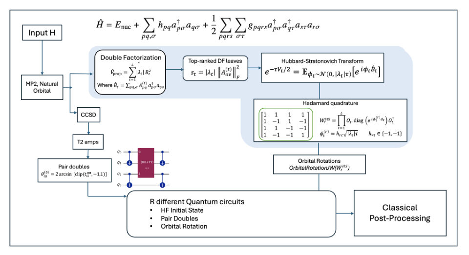
<figcaption class="paper-figure-caption"><b>Fig 1.</b> Figure 1: Schematic overview of the DF-SQD algorithm. The quantum stage combines CCSD-</figcaption>
</figure>
<figure class="paper-figure-card">
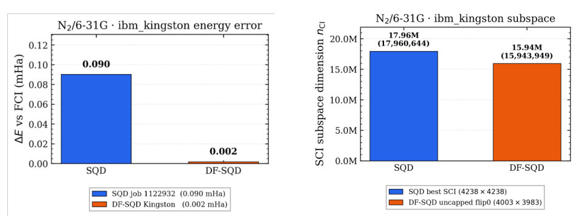
<figcaption class="paper-figure-caption"><b>Fig 2.</b> Figure 2: N2 validates determinant support generated on IBM Quantum hardware. (a) Error</figcaption>
</figure>
<figure class="paper-figure-card">
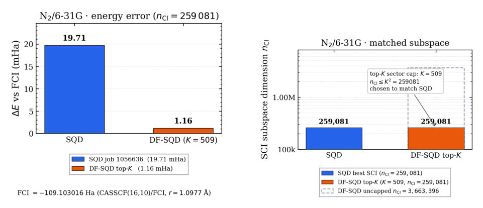
<figcaption class="paper-figure-caption"><b>Fig 3.</b> Figure 3: N2 simulator and baseline controls. The panels report the corresponding energy error</figcaption>
</figure>
<figure class="paper-figure-card">
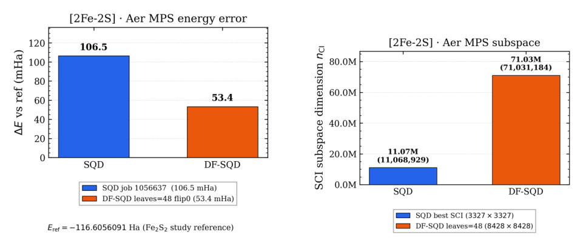
<figcaption class="paper-figure-caption"><b>Fig 4.</b> Figure 4: DF-SQD constructs a richer Fe2S2 determinant space in simulation. The (30𝑒, 20𝑜)</figcaption>
</figure>
<figure class="paper-figure-card">
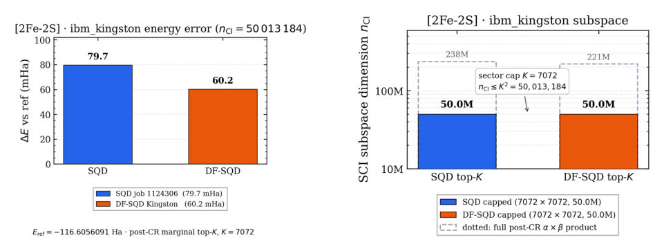
<figcaption class="paper-figure-caption"><b>Fig 5.</b> Figure 5: DF-SQD improves the Fe2S2 variational energy at a matched 50-million-determinant</figcaption>
</figure>
</div>
<p><strong>Summary.</strong> This paper introduces DF-SQD, a novel hybrid quantum-classical algorithm designed to improve the sampling-based diagonalization of molecular Hamiltonians. By deriving deterministic auxiliary-field circuits, DF-SQD efficiently proposes quantum states, leading to superior energy accuracy and reduced resource requirements compared to prior methods on benchmark molecules like $   ext{N}_2$ and $ ext{Fe}_2   ext{S}_2$.</p>
<p><strong>Why it may be interesting.</strong> This work directly addresses the resource scaling challenge in quantum chemistry simulations, providing a concrete, hybrid algorithmic improvement for accessing high-accuracy electronic structure data on near-term quantum hardware.</p>
<details>
<summary>Detailed structure</summary>
<p><strong>Main problem.</strong> The core problem is the quantum diagonalization of the Hamiltonian to accurately estimate ground-state eigenvalues and eigenvectors in quantum chemistry, which is computationally intractable for large systems.</p>
<p><strong>Main result.</strong> The proposed DF-SQD method significantly improves energy accuracy and resource efficiency compared to existing sampling-based methods (SQD) on both small ($   ext{N}_2$) and larger ($ ext{Fe}_2   ext{S}_2$) molecular systems.</p>
<p><strong>Method.</strong> DF-SQD is a hybrid algorithm that uses quantum circuits to deterministically propose occupation-number configurations, followed by classical configuration interaction to evaluate the Hamiltonian and guide subsequent proposals.</p>
<p><strong>Model / system.</strong> The work applies to quantum chemistry calculations, specifically simulating the $   ext{N}_2$ molecule and the $    ext{Fe}_2   ext{S}_2$ cluster, utilizing active-space Hamiltonians and mapping them onto qubit systems.</p>
<p><strong>Key observables.</strong> Energy error (relative to reference calculations), selected product-space dimension (number of determinants), sampling time, and QPU usage.</p>
<p><strong>Important parameters / regimes.</strong> Active space size (e.g., 32 qubits for $    ext{N}_2$, 40 qubits for $  ext{Fe}_2   ext{S}_2$), number of shots, and error tolerances.</p>
<p><strong>Assumptions / limitations.</strong> The method relies on the ability to derive deterministic auxiliary-field circuits and assumes that the energy estimate converges monotonically with increasing sampling resources.</p>
<p><strong>Figures summary.</strong> Figures illustrate the workflow (DF-SQD schematic), and comparisons of energy error and product-space dimension between DF-SQD and SQD on $    ext{N}_2$ and $ ext{Fe}_2   ext{S}_2$ using both simulation and hardware results.</p>
<p><strong>Paper structure.</strong> The paper introduces the DF-SQD hybrid algorithm, details its mechanism using auxiliary-field circuits, and validates its performance by comparing it against established sampling methods on two distinct molecular systems ($    ext{N}_2$ and $ ext{Fe}_2   ext{S}_2$) across simulation and hardware platforms.</p>
</details>
<details>
<summary>Abstract</summary>
<p>Sampling-based quantum diagonalization method exploits Quantum-centric supercomputing platforms to sample bitstrings for Hamiltonian projection on a quantum computer, and then classically diagonalize the Hamiltonian to estimate the eigenvalues and eigenvectors. In current quantum devices an algorithm is useful when shallow quantum circuits with error mitigation support can discover better results while having either a proof of convergence or some method to explain trust in experiment. In this paper, we introduce DF-SQD, a hybrid algorithm that derives deterministic auxiliary-field circuits from selected double-factorization leaves of the two-electron tensor. The circuits propose occupation-number configurations, while selected configuration interaction evaluates the original active-space Hamiltonian and can recentre subsequent proposal rounds. On N2 (32 qubits; 6-31G basis) and a 40-qubit [Fe2S2(SCH3)4]2- active-space Hamiltonian, we show that DF-SQD improves the energy obtained from sampled determinant spaces while using shallow number-preserving circuits in both simulator and hardware runs. For N2, DF-SQD is 45x more accurate with a 11.23\% smaller subspace, and due to its ability to sample better bitstrings at lesser shots it is 2.93x faster than SQD in quantum devices. For the iron-sulfur cluster, DF-SQD generated a subspace dimension of 221M with 400K shots, while SQD needed 1.5M shots to generate a 238M subspace, thus we have better subspace recovery evident from the hardware at 3.75x reduced shots. At a matched 50M subspace dimension, DF-SQD is 1.32x more accurate (achieves a 24.5\% relative error reduction over standard SQD). So overall, our method is able to discover better results with shallower circuits, is sample efficient, uses configuration recovery (so has targeted error mitigation) and we have empirical convergence observation.</p>
</details>
<p><sub><a href="#top">↑ back to top</a></sub></p>

<p><a id="paper-2609.00162"></a></p>
<h3 id="duality-between-the-level-statistics-of-hermitian-and-non-hermitian-random-matrices"><a href="http://arxiv.org/abs/2609.00162v1">Duality between the level statistics of Hermitian and non-Hermitian random matrices</a></h3>
<p><strong>Authors:</strong> Ze Chen, Zhenyu Xiao, Yifei Liu, Shinsei Ryu<br>
<strong>Type:</strong> theory · <strong>Category:</strong> statistical mechanics · <strong>PDF:</strong> <a href="https://arxiv.org/pdf/2609.00162v1">https://arxiv.org/pdf/2609.00162v1</a><br>
<strong>Analysis basis:</strong> full PDF text, analyzed in chunks</p>
<div class="figure-strip-hint">↔ Scroll figures horizontally</div>
<div class="paper-figures-scroll">
<figure class="paper-figure-card">
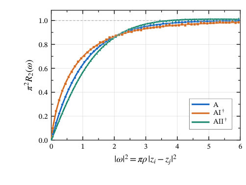
<figcaption class="paper-figure-caption"><b>Fig 1.</b> FIG. 1. Eigenvalue pair-correlation functions π2R2 for classes A, AI†, and AII† as functions of |ω|2. Solid curves are the ex- act large-N results [Eqs. (12), (14), and (16)], with no fitting parameters. Markers are exact-diagonalization results from 10,000 matrices of size N = 512 for classes A and AI† and N = 1024 for class AII†.</figcaption>
</figure>
<figure class="paper-figure-card">
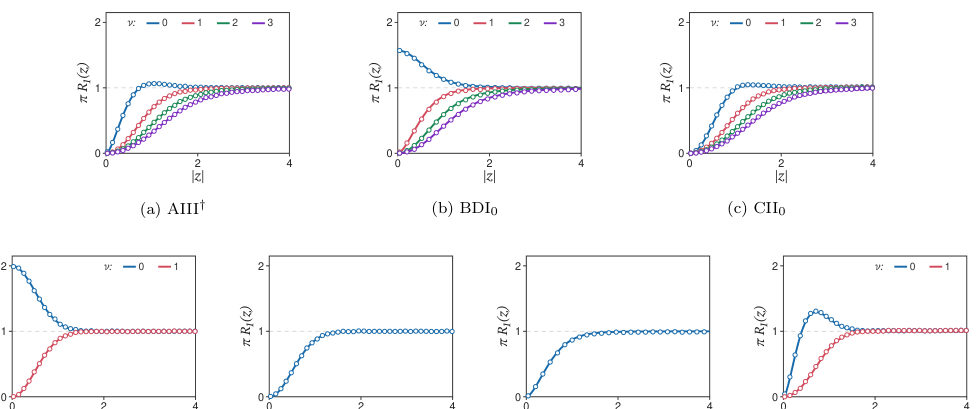
<figcaption class="paper-figure-caption"><b>Fig 2.</b> FIG. 2. Spectral densities near the origin, πR1(|z|), in the seven non-Wigner–Dyson AZ0 classes. Open circles are exact- diagonalization results from 106 Gaussian random matrices for every displayed class and topological sector, with base size N = 128; solid curves are the exact analytical densities of Table I, with no fitting parameters. The random matrix ensembles are normalized so that πR1(z) = 1 away from the spectral edge. Protected exact zero modes are excluded, and each Kramers pair in classes CII0 and DIII0 is counted once.</figcaption>
</figure>
<figure class="paper-figure-card">
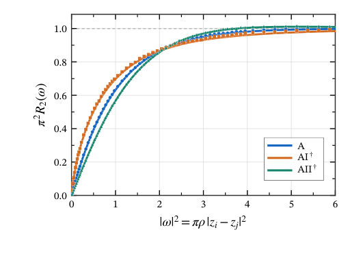
<figcaption class="paper-figure-caption"><b>Fig 3.</b> FIG. 4. Eigenvalue pair-correlation functions of the q = 4 non-Hermitian SYK model in classes A (Nγ = 18), AI† (Nγ = 16), and AII† (Nγ = 20), in the unfolded variables of Eq. (75). Markers are exact-diagonalization results from 105 disorder realizations per class, using eigenvalue pairs with a reference level in the central 30% of the spectrum. The solid curves are the exact analytical results of Eqs. (12), (14), and (16), with no fitting parameters.</figcaption>
</figure>
<figure class="paper-figure-card">
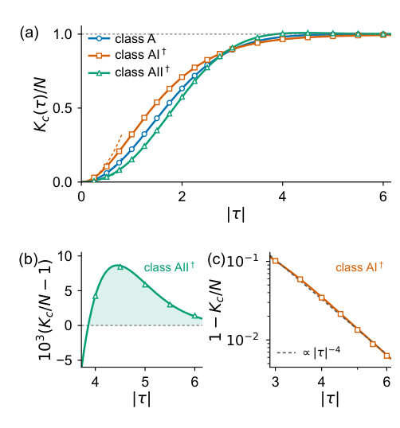
<figcaption class="paper-figure-caption"><b>Fig 4.</b> FIG. 3. Connected dissipative spectral form factor Kc/N for classes A, AI†, and AII†. Markers are Fourier transforms of bulk eigenvalue pair-correlation functions obtained by exact diagonalization of 3 × 106 Gaussian matrices per class, with N = 128 distinct eigenvalues; solid curves are the exact large- N results in Eqs. (69), (70), and (71). (a) Full crossover to the plateau; short dashed segments show the quadratic ramps in Eq. (72). (b) Plateau deviation for class AII†; the shaded positive region displays the overshoot. (c) Algebraic tail of class AI† on logarithmic axes. Statistical errors are smaller than the markers.</figcaption>
</figure>
<figure class="paper-figure-card">
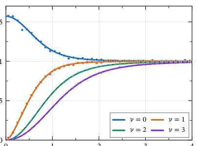
<figcaption class="paper-figure-caption"><b>Fig 5.</b> FIG. 5. The BDI0 spectral density near the origin, πR1, as a function of |z| in the sectors ν = 0, 1, 2, 3 for the quadratic Lindbladian model [Eq. (77)]. Markers are exact- diagonalization results for L = 18 from 100,000 disorder re- alizations per sector. Solid curves are the exact analytical densities of class BDI0 in Table I; the only fitted parameter is a single overall rescaling of the eigenvalues in each sector. Protected exact zero modes are not included.</figcaption>
</figure>
</div>
<p><strong>Summary.</strong> This work establishes a profound mathematical duality between the eigenvalue statistics of Hermitian and non-Hermitian random matrices. By relating replica partition functions via nonlinear sigma models, the authors derive universal, closed-form results for non-Hermitian spectral properties. This advances the understanding of complex quantum systems described by non-Hermitian Hamiltonians.</p>
<p><strong>Why it may be interesting.</strong> The explicit connection between Hermitian and non-Hermitian spectral statistics is crucial for understanding open quantum systems, where non-Hermiticity arises naturally from coupling to an environment (dissipation).</p>
<details>
<summary>Detailed structure</summary>
<p><strong>Main problem.</strong> The paper uncovers an exact duality connecting the level statistics of Hermitian and non-Hermitian random matrices.</p>
<p><strong>Main result.</strong> This duality establishes a non-Hermitian counterpart to Dyson's threefold way, providing closed-form expressions for bulk pair-correlation functions and hard-edge spectral densities for previously intractable non-Hermitian classes.</p>
<p><strong>Method.</strong> The duality is derived by relating two replica partition functions, which are formulated using fermionic nonlinear sigma models and evaluated in the large-N limit.</p>
<p><strong>Model / system.</strong> The study uses random matrix theory, comparing Hermitian ensembles (governed by standard symmetries) with non-Hermitian ensembles (governed by symmetries like $    ext{TRS}^\dagger$, $    ext{PHS}$, and $    ext{Chiral Symmetry}$).</p>
<p><strong>Key observables.</strong> Level statistics, including bulk eigenvalue pair-correlation functions and spectral densities near the origin (hard-edge statistics).</p>
<p><strong>Important parameters / regimes.</strong> Large-$N$ limit, symmetry classes (e.g., A, $   ext{AI}^\dagger$, $ ext{AII}^\dagger$), and the replica number $n$.</p>
<p><strong>Assumptions / limitations.</strong> The analysis relies on the large-$N$ limit and the mathematical framework of nonlinear sigma models derived from replica methods.</p>
<p><strong>Figures summary.</strong> Figure 1 compares calculated pair-correlation functions ($\pi^2 R_2(\omega)$) for non-Hermitian classes A, $   ext{AI}^\dagger$, and $ ext{AII}^\dagger$ against exact diagonalization results.</p>
<p><strong>Paper structure.</strong> The paper systematically establishes the duality using sigma models, applies it to the three Wigner-Dyson classes in the bulk, and then extends the mapping to the seven nonstandard Altland-Zirnbauer classes for the hard-edge statistics.</p>
</details>
<details>
<summary>Abstract</summary>
<p>Random matrix theory describes complex quantum systems statistically, with symmetry as its organizing principle. We uncover an exact duality between the level statistics of Hermitian and non-Hermitian random matrices in the large-$N$ (matrix size) limit. It acts class by class: the two replica partition functions, given by fermionic nonlinear $σ$ models, are related by analytic continuation. Applied to the three Wigner--Dyson classes, the duality yields the universal bulk eigenvalue pair-correlation functions of non-Hermitian random matrices. This establishes a non-Hermitian counterpart of Dyson's threefold way, organized by transposition symmetry: generic complex, complex symmetric, and complex self-dual matrices. The dissipative spectral form factors of these classes follow in closed form as well. Applied to the seven nonstandard Altland--Zirnbauer classes, the duality yields the exact spectral densities near the origin, the non-Hermitian hard-edge statistics. Most of these statistics were previously known only numerically. Exact diagonalization confirms the analytical predictions, and physical models demonstrate their universality. We expect these results to be the tip of a deeper correspondence between Hermitian and non-Hermitian random matrix theory.</p>
</details>
<p><sub><a href="#top">↑ back to top</a></sub></p>

<p><a id="paper-2609.01280"></a></p>
<h3 id="dynamical-regimes-of-qaoa-gradient-response"><a href="http://arxiv.org/abs/2609.01280v1">Dynamical regimes of QAOA gradient response</a></h3>
<p><strong>Authors:</strong> Zarin Shakibaei, Alexander Schnell<br>
<strong>Type:</strong> theory · <strong>Category:</strong> quantum information and computing · <strong>PDF:</strong> <a href="https://arxiv.org/pdf/2609.01280v1">https://arxiv.org/pdf/2609.01280v1</a><br>
<strong>Analysis basis:</strong> full PDF text, analyzed in chunks</p>
<div class="figure-strip-hint">↔ Scroll figures horizontally</div>
<div class="paper-figures-scroll">
<figure class="paper-figure-card">
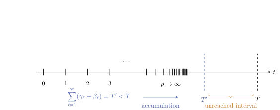
<figcaption class="paper-figure-caption"><b>Fig 1.</b> FIG. 1: Temporal trapping: Infinitely many QAOA layers accumulate within a finite time T ′ &lt; T, limiting the reachable set to R(T ′) ⊆R(T).</figcaption>
</figure>
<figure class="paper-figure-card">
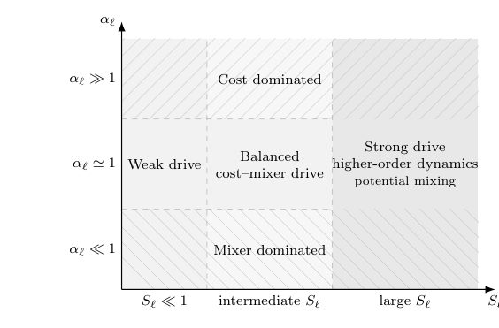
<figcaption class="paper-figure-caption"><b>Fig 2.</b> FIG. 2: Schematic dynamical regimes in the (Sℓ, αℓ) plane. Weak drive corresponds to per- turbative evolution with limited state displacement. At intermediate strength, the cost–mixer ratio distin- guishes mixer-dominated, balanced cost–mixer, and cost- dominated dynamics. At strong drive, higher-order dynamical contributions become significant, with mix- ing potentially emerging depending on spectral struc- ture. Hatched regions denote strongly imbalanced, single-generator-dominated limits. Dashed lines mark schematic crossovers rather than sharp boundaries; their positions and the relative extents of the displayed regimes can depend on the problem and circuit details and are not...</figcaption>
</figure>
<figure class="paper-figure-card">
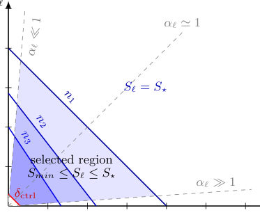
<figcaption class="paper-figure-caption"><b>Fig 3.</b> FIG. 3: Native-coordinate geometry and contrac- tion with system size. A selected region of the strength–imbalance plane, represented schematically by a finite strength interval Smin ≤Sℓ≤S⋆and restricted away from strongly imbalanced limits, maps to a finite region of the native (γℓ, βℓ) plane. Constant strength defines straight boundaries, whereas constant imbalance defines rays from the origin. As the generator norms grow with system size (n1 &lt; n2 &lt; n3), the native preimage of the same dynamical region contracts with characteristic scales set by ∥HC∥−1 and ∥HM∥−1. The imbalance rays are schematic; their slopes depend on ∥HC∥/∥HM∥and therefore generally vary with system size. The red...</figcaption>
</figure>
<figure class="paper-figure-card">
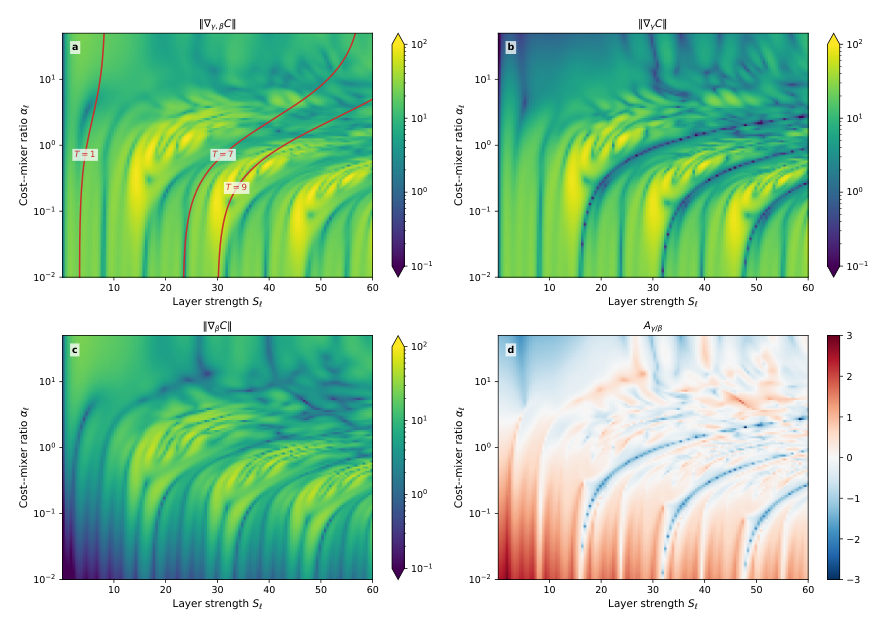
<figcaption class="paper-figure-caption"><b>Fig 4.</b> FIG. 4: Dynamical organization of the native-gradient response. Heatmaps over the (Sℓ, αℓ) plane for a representative dense, unweighted MaxCut instance with n = 10, depth p = 3, and a uniform schedule. a, Full native parameter-gradient norm ∥∇γ,βC∥. b, Cost-parameter component ∥∇γC∥. c, Mixer-parameter component ∥∇βC∥. d, Gradient anisotropy Aγ/β; positive values indicate cost-parameter-dominated sensitivity and negative values indicate mixer-parameter-dominated sensitivity. Contours indicate constant total physical evolution time T = p(γ +β) for the uniform schedule. Panels a–c use logarithmic colour scales.</figcaption>
</figure>
<figure class="paper-figure-card">
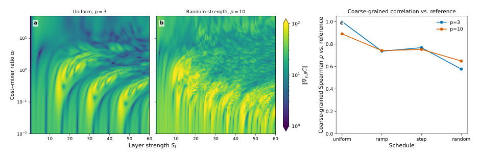
<figcaption class="paper-figure-caption"><b>Fig 5.</b> FIG. 5: Robustness of the gradient landscape to depth and schedule structure. Results for a representative dense, unweighted MaxCut instance with n = 10. a, Uniform schedule at p = 3, used as the reference landscape. b, Representative random-strength schedule at p = 10, with layerwise strengths varied using a fixed seeded random profile with σ = 0.4 and normalized to preserve the mean layer strength ¯S, while keeping the layerwise imbalance fixed. c, Spearman rank correlation of the coarse-grained gradient landscape for each tested schedule family and depth with the p = 3 uniform reference. The full set of schedule-resolved landscapes is shown in Supplementary Fig. 1.</figcaption>
</figure>
</div>
<p><strong>Summary.</strong> This work develops a dynamical framework for analyzing the Quantum Approximate Optimization Algorithm (QAOA) by reparameterizing the control space using a strength-imbalance measure. The authors show that the structure of useful quantum dynamics is robust across changes in circuit depth and scheduling, even when the corresponding native parameter region becomes highly compressed at large system sizes. This separates the inherent physical dynamics from the limitations of the standard parameterization.</p>
<p><strong>Why it may be interesting.</strong> The development of a dynamical framework that separates the intrinsic dynamics of the quantum process from the specific parametrization (native angles) is highly relevant for understanding the scalability and robustness of quantum algorithms.</p>
<details>
<summary>Detailed structure</summary>
<p><strong>Main problem.</strong> The paper aims to characterize the trainability of the QAOA gradient landscape by understanding how its gradient response changes across circuit parameters and problem size.</p>
<p><strong>Main result.</strong> The gradient landscape exhibits a coarse organization in a dynamical representation (strength–imbalance) that persists across circuit changes, and near-optimal solutions occupy a distinct intermediate dynamical regime, separate from the largest local gradients.</p>
<p><strong>Method.</strong> The authors introduce a dynamical representation of the QAOA parameter space using a norm-weighted layer strength and a cost–mixer imbalance, analyzing the gradient response using exact-state simulations and geometric bounds.</p>
<p><strong>Model / system.</strong> The system is the Quantum Approximate Optimization Algorithm (QAOA) applied to MaxCut problems, evolving under a time-dependent Hamiltonian composed of cost ($H_c$) and mixer ($H_m$) Hamiltonians.</p>
<p><strong>Key observables.</strong> Gradient landscape, near-optimal solution regions, layer strength ($S_\ell$), cost–mixer imbalance ($\alpha_\ell$), and solution quality ($P_{	ext{tail}}(0.9)$).</p>
<p><strong>Important parameters / regimes.</strong> Circuit depth ($p$), system size ($n$), and the dynamical variables (strength and imbalance) which separate overall evolution scale from relative generator contributions.</p>
<p><strong>Assumptions / limitations.</strong> The analysis assumes a piecewise constant control scheme, interpreting parameters as evolution times, and utilizes the Magnus expansion to describe effective dynamics.</p>
<p><strong>Figures summary.</strong> Figures illustrate the gradient response measure (GRMS) under random schedules, the persistence of high-quality solution regions across varying schedules, and the contraction of the high-response region in the native parameter space as system size increases.</p>
<p><strong>Paper structure.</strong> The paper first establishes the need for a dynamical representation by analyzing the QAOA gradient landscape. It then develops this framework using strength and imbalance, demonstrating that useful dynamics persist even if the native parameter region compresses with system size. Finally, it applies this to MaxCut to show the robustness of the optimal dynamical regime.</p>
</details>
<details>
<summary>Abstract</summary>
<p>Characterizing the trainability of the Quantum Approximate Optimization Algorithm (QAOA) requires understanding how its gradient landscape changes across circuit parameters and problem size. Yet these gradients are usually described in terms of the native QAOA angles, making it difficult to distinguish parameter specific features from broader changes in the underlying circuit dynamics. Here we introduce a dynamical representation of the QAOA parameter space based on a norm-weighted layer strength and a cost--mixer imbalance, separating the overall scale of the evolution from the relative contribution of the two generators.   Using exact-state simulations of MaxCut, we find that the gradient landscape exhibits a coarse organization in these dynamical variables that persists across changes in circuit depth and schedule structure, while the finer interference pattern remains schedule dependent. Near-optimal solutions do not simply coincide with the largest local gradients, but instead occupy a distinct intermediate dynamical regime. Uniform schedules recover the broad location of this regime, whereas nonuniform schedules mainly reorganize its fine structure. Across the system sizes studied, near-optimal solution regions remain extended in the dynamical representation while their preimages in the native QAOA angles become substantially compressed at larger sizes. These results separate the persistence of useful QAOA dynamics from their accessibility in the native parameterization, and provide a dynamical framework for interpreting QAOA trainability across circuit and problem scales.</p>
</details>
<p><sub><a href="#top">↑ back to top</a></sub></p>

<p><a id="paper-2609.01299"></a></p>
<h3 id="emerging-personas-and-tools-for-hybrid-quantum-hpc-systems"><a href="http://arxiv.org/abs/2609.01299v1">Emerging Personas and Tools for Hybrid Quantum-HPC Systems</a></h3>
<p><strong>Authors:</strong> Eun-Kyung Lee, Jessie Yu, Claudio Carvalho, Yoonho Park, Marcelo Amaral, Tim Osborne, Woong Shin<br>
<strong>Type:</strong> theory · <strong>Category:</strong> quantum information and computing · <strong>PDF:</strong> <a href="https://arxiv.org/pdf/2609.01299v1">https://arxiv.org/pdf/2609.01299v1</a><br>
<strong>Analysis basis:</strong> full PDF text, analyzed in chunks</p>
<div class="figure-strip-hint">↔ Scroll figures horizontally</div>
<div class="paper-figures-scroll">
<figure class="paper-figure-card">
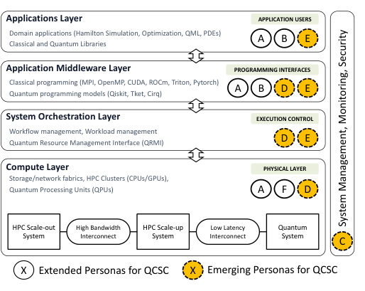
<figcaption class="paper-figure-caption"><b>Fig 1.</b> Fig. 1: Overview of six quantum user personas: A. Quantum Kernel and Library Developers, B. Domain Scientists, C. QCSC Operators, D. QCSC System Engineers, E. QCSC HPC Software Developers, and F. Quantum Physicists. The three emerging QCSC roles are highlighted in yellow.</figcaption>
</figure>
</div>
<p><strong>Summary.</strong> This paper addresses the operational challenges of integrating quantum processors with supercomputers, creating the concept of Quantum-Centric Supercomputing (QCSC). It achieves this by identifying and detailing six distinct user personas, each with unique tools and data requirements. The core contribution is establishing a framework based on these personas to guide the development of standardized data formats for the entire quantum-HPC ecosystem.</p>
<p><strong>Why it may be interesting.</strong> It provides a high-level, systems-engineering perspective on the practical challenges of quantum hardware integration, which informs the necessary software and data infrastructure for future quantum simulation work.</p>
<details>
<summary>Detailed structure</summary>
<p><strong>Main problem.</strong> The primary challenge is operationalizing Quantum-Classical Supercomputing (QCSC) by managing the complex integration of Quantum Processing Units (QPUs) with High-Performance Computing (HPC) systems.</p>
<p><strong>Main result.</strong> The paper argues that defining distinct user personas and understanding their specific data needs is crucial for developing the necessary consistent data representations and analytics frameworks for the entire quantum-HPC ecosystem.</p>
<p><strong>Method.</strong> The authors characterize six distinct user personas involved in QCSC environments, analyzing their responsibilities, required tools, and operational data needs.</p>
<p><strong>Model / system.</strong> The focus is on the conceptual framework of Quantum-Centric Supercomputing (QCSC) systems, which integrate QPUs (tens to hundreds of qubits) with classical HPC infrastructure.</p>
<p><strong>Key observables.</strong> Operational data, system health, resource utilization, circuit fidelity, and time-to-solution are key diagnostics.</p>
<p><strong>Important parameters / regimes.</strong> The scale of integration (tens to hundreds of qubits) and the need for unified resource management are critical.</p>
<p><strong>Assumptions / limitations.</strong> The paper assumes that a single term like 'quantum user' is insufficient, necessitating a persona-based approach to system design.</p>
<p><strong>Figures summary.</strong> Figure 1 provides an overview of six quantum user personas and their relationship to the layered QCSC architecture, while Table I lists the tools associated with each persona.</p>
<p><strong>Paper structure.</strong> The paper identifies the QCSC problem, characterizes the six user personas, analyzes their roles and tools, and concludes by stressing the need for standardized data representations to support the diverse user base.</p>
</details>
<details>
<summary>Abstract</summary>
<p>Quantum computing is entering an era where quantum processing units (QPUs) with tens to hundreds of qubits are increasingly integrated with high-performance computing (HPC) systems to support hybrid quantum-classical workloads. This paradigm, often referred to as Quantum-Centric SuperComputing (QCSC), introduces new operational, software, and infrastructure challenges. In this paper, we identify and characterize six distinct personas involved in QCSC environments. Particular attention is given to emerging roles that arise at the interface between quantum and HPC systems. We analyze the responsibilities and tools associated with each persona and examine their differing requirements for operational data. Consistent data representations and analytics frameworks will be required to support diverse users across the quantum-HPC ecosystem. By defining personas and their data needs, we provide a foundation for future discussions in this critical area.</p>
</details>
<p><sub><a href="#top">↑ back to top</a></sub></p>

<p><a id="paper-2609.00164"></a></p>
<h3 id="exact-joint-eigenvalue-densities-of-non-hermitian-random-matrices-are-calogero-scattering-states"><a href="http://arxiv.org/abs/2609.00164v1">Exact joint eigenvalue densities of non-Hermitian random matrices are Calogero scattering states</a></h3>
<p><strong>Authors:</strong> Zhenyu Xiao, Ze Chen, Yifei Liu, Shinsei Ryu<br>
<strong>Type:</strong> theory · <strong>Category:</strong> statistical mechanics · <strong>PDF:</strong> <a href="https://arxiv.org/pdf/2609.00164v1">https://arxiv.org/pdf/2609.00164v1</a><br>
<strong>Analysis basis:</strong> full PDF text, analyzed in chunks</p>
<div class="figure-strip-hint">↔ Scroll figures horizontally</div>
<div class="paper-figures-scroll">
<figure class="paper-figure-card">
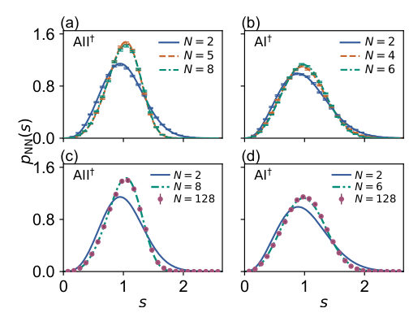
<figcaption class="paper-figure-caption"><b>Fig 1.</b> FIG. 1. (a),(b) Spacing distributions pNN;(N)(s), conditioned on an eigenvalue at the origin. Lines: predictions from the exact densities. Error bars: direct diagonalization. (c),(d) Comparison with the bulk spacings of large random matrices; here the statistical errors are smaller than the markers.</figcaption>
</figure>
<figure class="paper-figure-card">
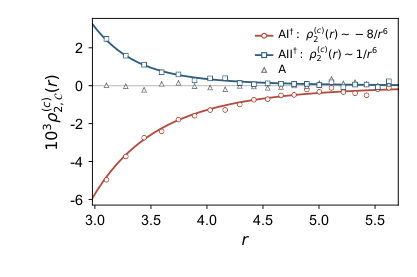
<figcaption class="paper-figure-caption"><b>Fig 2.</b> FIG. 2. Bulk pair correlation ρ(c) 2,C(r) at separation r, after rescaling each class to ρ1 = 1/π, for N = 128, from 3 × 106</figcaption>
</figure>
<figure class="paper-figure-card">
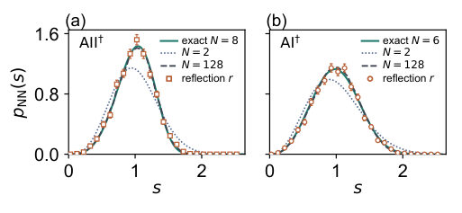
<figcaption class="paper-figure-caption"><b>Fig 3.</b> FIG. 3. Spacing distribution of the complex eigenvalues of the reflection block r, locally unfolded to unit mean, for (a) class AII† and (b) class AI†. Error bars: standard errors over 400 disorder realizations.</figcaption>
</figure>
</div>
<p><strong>Summary.</strong> This work solves the long-standing problem of finding exact joint eigenvalue densities for non-Hermitian random matrices with specific symmetries. The key finding is that these densities are mathematically equivalent to the scattering states of the Calogero model. This reveals that the spectral statistics are governed by integrable dynamics, leading to power-law tails in correlation functions absent in simpler models.</p>
<p><strong>Why it may be interesting.</strong> The connection between random matrix theory, integrability (Calogero model), and spectral statistics provides deep insights into the underlying symmetries governing complex quantum systems, which is relevant to understanding spectral rigidity in quantum chaotic systems.</p>
<details>
<summary>Detailed structure</summary>
<p><strong>Main problem.</strong> The paper determines the exact joint eigenvalue densities for non-Hermitian random matrices possessing transposition symmetry.</p>
<p><strong>Main result.</strong> These joint densities are shown to be scattering-state wave functions of the Calogero model, revealing complex spectral statistics beyond simple Coulomb gas behavior.</p>
<p><strong>Method.</strong> The analysis involves solving differential equations derived from Gaussian integration by parts and relating the resulting structure to known integrable systems like the Calogero model.</p>
<p><strong>Model / system.</strong> The model consists of non-Hermitian random matrices belonging to three symmetry classes ($  ext{AI}^\dagger$, $ ext{A}$, $  ext{AII}^\dagger$). The underlying physics is governed by an eigenvalue problem whose structure is mapped onto the Calogero Hamiltonian.</p>
<p><strong>Key observables.</strong> Joint eigenvalue density ($
ho_C(z)$), nearest-neighbor spacing distribution ($p_{   ext{NN}}(s)$), and two-point spectral correlation functions.</p>
<p><strong>Important parameters / regimes.</strong> The symmetry class dictates the Calogero coupling strength ($k$), which is crucial for determining the spectral behavior.</p>
<p><strong>Assumptions / limitations.</strong> The analysis relies on identifying an underlying integrable structure (Calogero model) and making approximations in the collision limit for density calculations.</p>
<p><strong>Figures summary.</strong> Figures compare origin-conditioned nearest-neighbor spacing distributions across different symmetry classes and show the asymptotic behavior of the spacing density.</p>
<p><strong>Paper structure.</strong> The paper establishes the problem by defining the symmetry classes, derives the governing differential equations for the density, connects the solution to the Calogero scattering states, and analyzes specific observables like correlation functions and spacing distributions for each class.</p>
</details>
<details>
<summary>Abstract</summary>
<p>Determining exact joint eigenvalue densities is central to random matrix theory. We solve this long-standing problem for non-Hermitian matrices with transposition symmetry (complex symmetric and complex self-dual) at arbitrary matrix size. Up to a Vandermonde factor, they are scattering-state wave functions of the Calogero model, a line of particles interacting through an inverse-square potential, with the coupling strength set by the symmetry. In contrast to many previously known joint densities, the densities cannot be written as a gas of eigenvalues with pairwise interactions. We further compute the complex level spacing distributions and two-point spectral correlation functions, which carry power-law tails, absent in a Coulomb gas. Our results shed light on the interplay among random matrices, integrability, and symmetry.</p>
</details>
<p><sub><a href="#top">↑ back to top</a></sub></p>

<p><a id="paper-2609.01419"></a></p>
<h3 id="exact-virtual-channel-programming-with-vanishing-excess-overhead"><a href="http://arxiv.org/abs/2609.01419v1">Exact Virtual Channel Programming with Vanishing Excess Overhead</a></h3>
<p><strong>Authors:</strong> Mingrui Jing, Mengbo Guo, Hongshun Yao, Xin Wang<br>
<strong>Type:</strong> theory · <strong>Category:</strong> quantum information and computing · <strong>PDF:</strong> <a href="https://arxiv.org/pdf/2609.01419v1">https://arxiv.org/pdf/2609.01419v1</a><br>
<strong>Analysis basis:</strong> full PDF text, analyzed in chunks</p>
<div class="figure-strip-hint">↔ Scroll figures horizontally</div>
<div class="paper-figures-scroll">
<figure class="paper-figure-card">
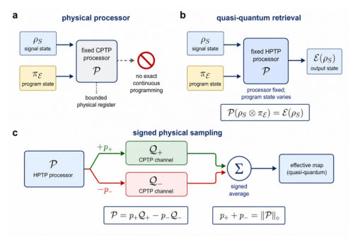
<figcaption class="paper-figure-caption"><b>Fig 1.</b> FIG. 1. Exact virtual channel programming. (a) A fixed physical processor with a finite-dimensional program register cannot exactly realize a continuous family of distinct unitary channels. (b) A physical normalized Choi state πE selects the target channel for a fixed linear retrieval rule P. Its averaged action satisfies P(ρS ⊗πE) = E(ρS) at the level of recon- structed output observables. (c) Each trial samples one of the physical channels in a norm-optimal quasi-decomposition P = p+Q+ −p−Q−and classically reweights the measured outcome. The total weight p+ + p−= ∥P∥⋄quantifies the cost of P. Minimizing this total weight over exact retrievers defines the programming overhead.</figcaption>
</figure>
</div>
<p><strong>Summary.</strong> This paper rigorously quantifies the resource cost associated with simulating an arbitrary quantum channel family using limited physical resources. It derives sharp scaling laws showing a trade-off between quantum memory and classical sampling overhead. The results recast a fundamental theoretical obstruction into a precise, measurable quantitative bound.</p>
<p><strong>Why it may be interesting.</strong> This work provides fundamental quantitative bounds on the limits of quantum simulation and programming, which is crucial for understanding the resource overheads in quantum computation and quantum networking protocols.</p>
<details>
<summary>Detailed structure</summary>
<p><strong>Main problem.</strong> The paper addresses the quantitative trade-off between the memory required to store a quantum program and the classical sampling overhead needed to exactly reconstruct the output statistics of an arbitrary quantum channel family.</p>
<p><strong>Main result.</strong> It establishes sharp scaling laws for the required overhead, showing that the one-copy overhead $
u_1(    ext{CPTP}_d) = 2d^2 - 3 + 2/d^2$, and that for many copies, $
u_k(    ext{CPTP}_d)$ approaches a limit determined by the locally learnable unitary degrees of freedom.</p>
<p><strong>Method.</strong> The analysis employs advanced techniques involving quasi-decomposition, semidefinite programming (SDP) formulations derived from mixed-tensor representations, and establishing lower bounds via covariant retrievers.</p>
<p><strong>Model / system.</strong> The system models the process of 'virtual' programming of a fixed physical processor to emulate an arbitrary family of $d$-dimensional quantum channels ($  ext{CPTP}_d$). The reconstruction relies on randomized sampling and classical post-processing.</p>
<p><strong>Key observables.</strong> The primary observables are the programming overheads, $
u_k(    ext{CPTP}_d)$, quantified by the diamond norm $\lVert P 
Vert_\diamond$, and the required number of samples $N$.</p>
<p><strong>Important parameters / regimes.</strong> The key parameters are the system dimension $d$ and the number of copies $k$ used in the reconstruction protocol.</p>
<p><strong>Assumptions / limitations.</strong> The analysis assumes the target channel family is $  ext{CPTP}_d$ and that the reconstruction protocol involves sampling physical channels followed by classical post-processing.</p>
<p><strong>Figures summary.</strong> Figures contrast physical channel implementation versus exact reconstruction protocols, while tables present numerical results for finite-copy calculations comparing SDP bounds with PBT-achievable upper bounds.</p>
<p><strong>Paper structure.</strong> The paper builds from defining the quantitative obstruction to exact programming, deriving the optimal one-copy overhead ($
u_1$), and then establishing the asymptotic scaling law for the many-copy regime ($
u_k$ as $k 	o \infty$) using advanced algebraic and SDP techniques.</p>
</details>
<details>
<summary>Abstract</summary>
<p>A finite-dimensional physical processor cannot exactly program a continuous family of distinct unitary channels. We show that this obstruction becomes quantitative when the target channel is stored in a normalized Choi state and its output observables are reconstructed by sampling physical channels and classically post-processing their measurement outcomes. For arbitrary $d$-dimensional channels, we construct a target-independent exact reconstruction protocol and prove the optimal one-copy sampling overhead, which grows quadratically with system dimension. We further prove the sharp fixed-$d$ law that the excess overhead vanishes inversely with the number of identical Choi programs. The upper bound combines deterministic port-based teleportation with a quasi-decomposition that corrects its depolarizing distortion. The converse maps any low-overhead reconstruction protocol to a physical learner of unknown unitaries and uses local quantum estimation to recover the same leading coefficient. These results recast the universal no-programming obstruction as a quantitative trade-off between quantum program memory and classical sampling, with a leading cost that reflects the locally learnable unitary degrees of freedom.</p>
</details>
<p><sub><a href="#top">↑ back to top</a></sub></p>

<p><a id="paper-2609.00475"></a></p>
<h3 id="fractal-dimension-predicts-quantum-kernel-collapse-in-angle-encoded-data"><a href="http://arxiv.org/abs/2609.00475v1">Fractal dimension predicts quantum kernel collapse in angle-encoded data</a></h3>
<p><strong>Authors:</strong> Ana Paula Appel<br>
<strong>Type:</strong> both · <strong>Category:</strong> quantum information and computing · <strong>PDF:</strong> <a href="https://arxiv.org/pdf/2609.00475v1">https://arxiv.org/pdf/2609.00475v1</a><br>
<strong>Analysis basis:</strong> full PDF text, analyzed in chunks</p>
<div class="figure-strip-hint">↔ Scroll figures horizontally</div>
<div class="paper-figures-scroll">
<figure class="paper-figure-card">
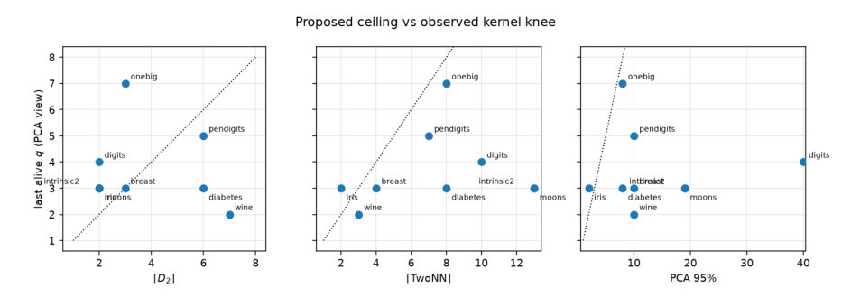
<figcaption class="paper-figure-caption"><b>Fig 1.</b> Figure 1: A point on the dotted y = x line means the proposed ceiling equals the knee of the fidelity kernel (PCA view, one-layer ZZ, n = 32; knee = last alive q, Section 2.5). Left: ⌈D2⌉sits next to that knee (breast on the line at 3; pendigits 6 vs. 5). Centre: TwoNN [Facco et al., 2017] overshoots moons/intrinsic2 (≈13) because it treats embedding noise as extra dimension. Right: PCA-95% asks for 10–40 qubits while the kernel has already died at q ≤5—that panel has its own x-axis so the live knees (2–7) remain visible. Outliers we report as failures: onebig (kernel lives past the ceiling), wine/diabetes (high ID, n = 32 dies early), digits (unreliable box-count).</figcaption>
</figure>
<figure class="paper-figure-card">
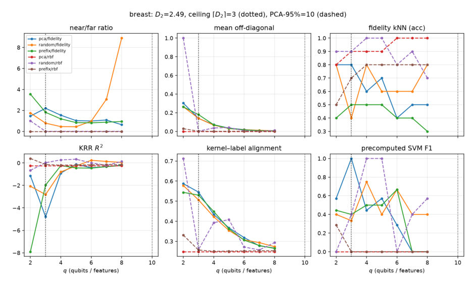
<figcaption class="paper-figure-caption"><b>Fig 2.</b> Figure 2: Breast cancer (E = 30, D2 ≈2.49). Dotted vertical: fractal budget q = 3. Grey dashed: PCA-95% (q = 10). Solid lines: fidelity kernel (the QML object). Dashed lines: classical RBF on the same coordinates (control). Mean off-diagonal (top centre): every fidelity curve falls toward 0 as q grows—states become orthogonal; RBF does not, so this is the feature map, not classical high dimension. near/far, kNN, SVM F1: on the PCA view of the fidelity kernel the usable geometry and the QML scores peak at the knee q = 3 and degrade past it. Alignment falls with q. KRR is noisy at n = 32; we do not hang the claim on it. The practical reading: encoding 3 PCs (the fractal width) keeps a live...</figcaption>
</figure>
<figure class="paper-figure-card">
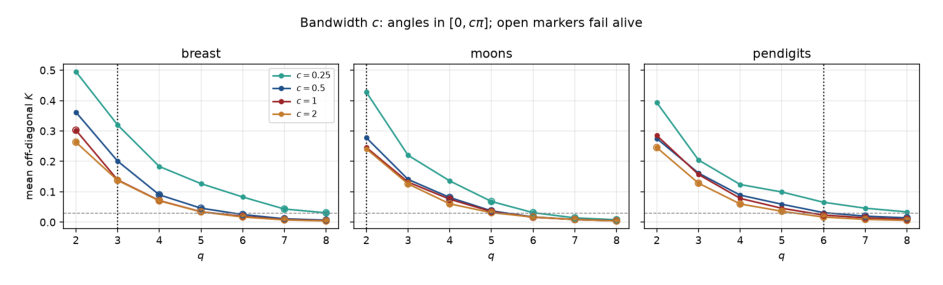
<figcaption class="paper-figure-caption"><b>Fig 3.</b> Figure 3: Mean off-diagonal of K versus q at four bandwidths. Dotted vertical: ⌈D2⌉. Dashed horizontal: the 0.03 alive floor. Open markers fail the alive rule. Smaller c (angles in [0, cπ]) delays collapse; c = 1 is the default ZZ scale.</figcaption>
</figure>
<figure class="paper-figure-card">
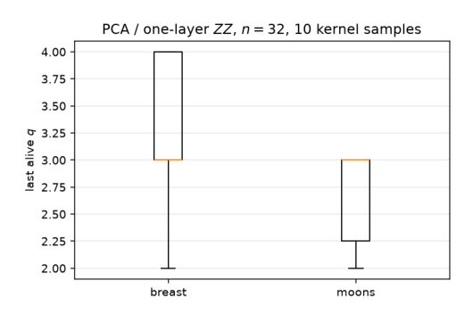
<figcaption class="paper-figure-caption"><b>Fig 4.</b> Figure 4: Last alive q over ten kernel samples (n = 32, PCA, one-layer ZZ, c = 1). Median 3 on both breast and moons.</figcaption>
</figure>
<figure class="paper-figure-card">

<figcaption class="paper-figure-caption"><b>Fig 5.</b> Figure 5: Packed encodings, simulator, n = 32. Y : mean off-diagonal of the fidelity kernel (higher = less collapsed). Teal: alive. Grey: dead. Dotted: 0.03 threshold. Left to right in each panel: ZZ at ⌈D2⌉; ZZ beyond it; dense-angle / re-upload of a few extra PCs on the fractal q; re-upload of a PCA-95%-scale feature count on that q. The last of those is grey: stacking extra coordinates onto fewer qubits is not a workaround.</figcaption>
</figure>
</div>
<p><strong>Summary.</strong> This paper addresses kernel collapse in quantum machine learning by proposing that the correlation fractal dimension ($D_2$) dictates the maximum usable number of qubits. The authors demonstrate that using $D_2$ as a budget keeps the quantum kernel functional on both simulators and hardware, whereas over-encoding using methods like PCA causes the kernel to collapse.</p>
<p><strong>Why it may be interesting.</strong> The work provides a rigorous, information-theoretic measure ($D_2$) to guide the design of quantum circuits for data encoding, directly addressing the resource scaling problem in QML.</p>
<details>
<summary>Detailed structure</summary>
<p><strong>Main problem.</strong> Quantum kernel methods applied to tabular data suffer from 'kernel collapse' when the feature map width exceeds the data's true intrinsic dimension.</p>
<p><strong>Main result.</strong> The correlation fractal dimension ($D_2$) provides a superior, data-driven estimate for the optimal qubit budget, keeping the quantum kernel 'geometrically alive' where standard methods like PCA fail.</p>
<p><strong>Method.</strong> The authors use the correlation fractal dimension ($D_2$) derived from the data to set an a priori qubit budget, comparing the resulting quantum kernel fidelity against those derived from PCA or all attributes.</p>
<p><strong>Model / system.</strong> The model involves constructing quantum feature maps ($\vert\psi(x)
angle$) using rotations on qubits (e.g., ZZ map) to define a quantum kernel $K_{ij} = \langle\psi(x_i) | \psi(x_j)
angle$ for classification on tabular data.</p>
<p><strong>Key observables.</strong> Kernel fidelity, the 'knee' width (last usable qubit count), and the ratio of nearest-neighbor to farthest-pair kernel similarities ($ ext{near}/  ext{far}$).</p>
<p><strong>Important parameters / regimes.</strong> The correlation fractal dimension ($D_2$), the bandwidth ($c$), and the specific feature map used (e.g., ZZ layer depth).</p>
<p><strong>Assumptions / limitations.</strong> The optimal qubit budget is determined by the fractal dimension, and the kernel's usability is defined by maintaining specific structural inequalities (the 'alive' criterion).</p>
<p><strong>Figures summary.</strong> Figures compare the measured kernel fidelity (MAE) and the mean off-diagonal elements of the kernel matrix across various feature map widths, showing a clear collapse past the fractal dimension limit.</p>
<p><strong>Paper structure.</strong> The paper establishes the problem of kernel collapse, proposes $D_2$ as the solution, validates this budget using multiple datasets and map types (ZZ, IQP), and confirms the findings using both quantum simulators and actual quantum hardware measurements.</p>
</details>
<details>
<summary>Abstract</summary>
<p>Angle-encoded quantum kernels on tabular data collapse when the feature map is wider than the intrinsic dimension of the data. We propose the correlation fractal dimension D2 as an a priori qubit budget: encode D2 coordinates chosen by FD-ASE instead of the PCA-95% width or all E attributes. On nine data sets and a statevector simulator (n= 32), a one-layer ZZ fidelity kernel at q=D2 stays geometrically alive while the same kernel at the PCA-95% width has already collapsed. The budget is map-dependent: product-state and IQP maps overshoot it; a second ZZ layer undershoots it. Packed dense-angle and re-uploading encodings still live at the fractal q, but not when PCA-95% features are stacked onto those qubits. Shrinking the angle bandwidth moves the ZZ knee later; stretching it kills the kernel earlier. On IBM Quantum (ibm_fez, 256 shots, n=8) the one-layer ZZ kernel at the fractal width matches the exact kernel (MAE 0.021); past that width both hardware and simulator have collapsed. The ceiling is a property of the map-data pair at a stated bandwidth, not of the classical table alone.</p>
</details>
<p><sub><a href="#top">↑ back to top</a></sub></p>

<p><a id="paper-2609.00778"></a></p>
<h3 id="high-rank-encoding-can-improve-approximate-quantum-error-correction"><a href="http://arxiv.org/abs/2609.00778v1">High-Rank Encoding Can Improve Approximate Quantum Error Correction</a></h3>
<p><strong>Authors:</strong> Bikun Li, Liang Jiang<br>
<strong>Type:</strong> theory · <strong>Category:</strong> quantum information and computing · <strong>PDF:</strong> <a href="https://arxiv.org/pdf/2609.00778v1">https://arxiv.org/pdf/2609.00778v1</a><br>
<strong>Analysis basis:</strong> full PDF text, analyzed in chunks</p>
<div class="figure-strip-hint">↔ Scroll figures horizontally</div>
<div class="paper-figures-scroll">
<figure class="paper-figure-card">

<figcaption class="paper-figure-caption"><b>Fig 1.</b> FIG. 1. (a) The upper bound ∆(ε, s) given by Eq. (5) for different values of s. The black dashed curve is the earlier ε(1−ε) bound derived from Ref. [27]. (b) Numerical estimates of the optimized gap versus optimized infidelity for the noise maps constructed below and different values of dL, with dC = d2 L. The inset compares the finite-error ratios of the plotted gaps to (εopt)2 with the asymptotic ceiling (dL −1)/4. The exact limiting coefficient is given by Eq. (25).</figcaption>
</figure>
</div>
<p><strong>Summary.</strong> This paper rigorously proves that for optimal approximate quantum error correction, restricting the encoder to rank-one mappings sacrifices performance compared to unrestricted encoding. The authors derive a precise, asymptotically quadratic lower bound for this performance gap, demonstrating that higher-rank encoders are necessary for achieving the true optimum.</p>
<p><strong>Why it may be interesting.</strong> This work provides rigorous mathematical tools to quantify the performance limits of quantum error correction, which is fundamental to building fault-tolerant quantum computers. The explicit determination of the necessary encoder rank is a key theoretical result.</p>
<details>
<summary>Detailed structure</summary>
<p><strong>Main problem.</strong> The paper investigates whether optimal approximate quantum error correction (AQEC) requires an encoder of rank higher than one, challenging the assumption that rank-one encoders suffice for optimal performance.</p>
<p><strong>Main result.</strong> The authors prove that for entanglement fidelity, a higher-rank encoder is necessary to achieve the global optimum, establishing a strictly positive gap between the unrestricted and rank-one achievable fidelities.</p>
<p><strong>Method.</strong> The analysis uses entanglement fidelity as the objective function, deriving refined upper bounds on the infidelity gap by employing techniques like polar decomposition and analyzing the geometry of the error correction manifold.</p>
<p><strong>Model / system.</strong> The model is the general quantum error correction framework involving an encoder ($C$), a noise map ($N$), and a decoder ($D$). The analysis focuses on comparing the optimal fidelity achievable with unrestricted encoders versus those restricted to rank-one mappings.</p>
<p><strong>Key observables.</strong> Entanglement fidelity ($F_e$), the optimized gap ($\Delta_{opt}$), and the asymptotic quadratic coefficient ($\kappa^{(2)}$) quantifying the difference between optimal and rank-one performance.</p>
<p><strong>Important parameters / regimes.</strong> The small noise parameter ($\epsilon 	o 0+$) and the logical dimension ($d_L$) are crucial for determining the asymptotic behavior of the gap.</p>
<p><strong>Assumptions / limitations.</strong> The analysis assumes the encoder $C$ is a Completely Positive Trace Non-Increasing (CPTNI) map, and later relies on the existence of a global minimizer for the fidelity difference.</p>
<p><strong>Figures summary.</strong> Figure 1(a) compares the derived upper bound on the infidelity gap against prior work. Figure 1(b) shows numerical estimates of the optimized gap versus infidelity for varying logical dimensions, comparing them to the derived asymptotic ceiling.</p>
<p><strong>Paper structure.</strong> The paper progresses from establishing general upper bounds on the gap using fidelity measures, to constructing specific noise families that demonstrate a positive gap, and finally employing advanced geometric analysis (tangent spaces, residual equivariance) to derive the exact asymptotic quadratic coefficient.</p>
</details>
<details>
<summary>Abstract</summary>
<p>Conventional quantum-code constructions encode pure logical states as pure code states, but this restriction can sacrifice performance. We show that intrinsic encoding randomness can improve optimal entanglement fidelity. We bound the loss from imposing a rank-one encoder and prove it is at most quadratic near perfect recovery after joint optimization. The optimized advantage survives small noise perturbations. An explicit noise family requires higher-rank encoders arbitrarily close to perfect recovery, with every optimal encoder mapping pure inputs to mixed code states.</p>
</details>
<p><sub><a href="#top">↑ back to top</a></sub></p>

<p><a id="paper-2609.00170"></a></p>
<h3 id="higher-anomalies-compressing-spts-and-cohomology-operations"><a href="http://arxiv.org/abs/2609.00170v1">Higher anomalies, compressing SPTs and cohomology operations</a></h3>
<p><strong>Authors:</strong> Shani Nadir Meynet, Elias Riedel Gårding<br>
<strong>Type:</strong> theory · <strong>Category:</strong> strongly correlated electrons · <strong>PDF:</strong> <a href="https://arxiv.org/pdf/2609.00170v1">https://arxiv.org/pdf/2609.00170v1</a><br>
<strong>Analysis basis:</strong> full PDF text, analyzed in chunks</p>
<div class="figure-strip-hint">↔ Scroll figures horizontally</div>
<div class="paper-figures-scroll">
<figure class="paper-figure-card">

<figcaption class="paper-figure-caption"><b>Fig 1.</b> Figure 1: The configuration space C(G, d) with d = 2.</figcaption>
</figure>
<figure class="paper-figure-card">

<figcaption class="paper-figure-caption"><b>Fig 2.</b> Figure 2: Particle exchange is null-homotopic, so the particles are bosons.</figcaption>
</figure>
<figure class="paper-figure-card">

<figcaption class="paper-figure-caption"><b>Fig 3.</b> Figure 3: A submanifold ZD−q ⊂XD and its tubular neighbourhood in the inflow picture (D = 2, q = 1 is shown).</figcaption>
</figure>
<figure class="paper-figure-card">

<figcaption class="paper-figure-caption"><b>Fig 4.</b> Figure 4: Confining the gauge field to a tubular neighbourhood of W is equivalent to confining it to the q-fold suspension of W.</figcaption>
</figure>
</div>
<p><strong>Summary.</strong> This theoretical paper uses advanced algebraic topology to study how symmetries and their associated anomalies change when a quantum system undergoes dimensional reduction. By calculating the cohomology suspension map, the authors provide a systematic method to determine the 'higher anomaly' that governs the stability and classification of topological phases in condensed matter systems.</p>
<p><strong>Why it may be interesting.</strong> While highly abstract, the concept of symmetry protection and anomaly classification is fundamental to understanding topological phases, which underpin many modern condensed matter models, including those involving strong correlations.</p>
<details>
<summary>Detailed structure</summary>
<p><strong>Main problem.</strong> The paper computes and tabulates the suspension map for cohomology operations, applying this to understand how anomalies and higher group structures behave under dimensional reduction in quantum field theories.</p>
<p><strong>Main result.</strong> The analysis determines the 'higher anomaly' of a reduced symmetry and the reduced higher-group structure, both captured by the iterated cohomology suspension map $\Omega$.</p>
<p><strong>Method.</strong> The authors use advanced algebraic topology, specifically studying the cohomology suspension $\Omega$ on Eilenberg-MacLane spaces, extending methods from Cartan and Moore, and automating calculations with a specialized software package.</p>
<p><strong>Model / system.</strong> The focus is on quantum systems possessing discrete $p$-form symmetries. The physical process modeled is the dimensional reduction of the system by restricting symmetry defects to a codimension-$q$ subspace.</p>
<p><strong>Key observables.</strong> The anomaly of the reduced symmetry (the higher anomaly) and the reduced higher-group structure, which are elements in various cohomology groups.</p>
<p><strong>Important parameters / regimes.</strong> The codimension $q$ of the subspace, the form degree $p$, and the coefficient ring (e.g., $\mathbb{R}/\mathbb{Z}$ for anomalies).</p>
<p><strong>Assumptions / limitations.</strong> The analysis relies on the mathematical framework of generalized cohomology theories and the properties of the cohomology suspension map $\Omega$.</p>
<p><strong>Figures summary.</strong> The notes mention extensive tables (e.g., Table 1, Table 9 &amp; 10) providing computed results for cohomology operations and their dependence on the coefficient group.</p>
<p><strong>Paper structure.</strong> The paper proceeds by first defining the physical problem (dimensional reduction of symmetries), then introducing the mathematical tool ($\Omega$), detailing the computational extension (p-adic series, <code>emcm</code>), and finally applying it to compute and tabulate the resulting anomalies and structures.</p>
</details>
<details>
<summary>Abstract</summary>
<p>We explicitly compute and tabulate the suspension map for cohomology operations, applying it to the dimensional reduction of anomalies and higher group structures of generalised symmetries in quantum field theories and lattice systems.   In a quantum system with a discrete $p$-form symmetry, we can restrict the symmetry defects to a codimension-$q$ subspace of spacetime, or equivalently confine the gauge field to a slab whose thickness approaches zero. This results in a $(p-q)$-form symmetry on the subspace. We determine the fate of two important properties of symmetries under this process. First, we compute the anomaly of the reduced symmetry, or the higher anomaly of the original symmetry, which acts as an obstruction to higher gauging and onsiteability. Second, for two symmetries forming a higher-group structure, encoded as a Postnikov class, we compute the reduced higher-group structure, which may or may not be trivial. Both cases are captured by the $q$-fold iteration of the cohomology suspension $Ω$, also known as the loop functor or transgression, in the cohomology of Eilenberg--MacLane spaces. Classical results state that $Ω$ is an isomorphism in a stable range and annihilates mixed anomalies.   To calculate $Ω$ over a base ring which is not a field, we make use of small models for the chain DGAs of Eilenberg--MacLane spaces, pioneered by Cartan and Moore, whose results we review and extend. The critical added step is the improvement of a mod $p$ chain contraction to the $p$-local integers, obtained via a $p$-adic series. We automate the computations in a software package \texttt{emcm}, and provide extensive tables of the results. Finally, to make contact with explicit cochain formulations of cohomology operations, we demonstrate how to calculate cup products and certain cup-$i$ products in this framework.</p>
</details>
<p><sub><a href="#top">↑ back to top</a></sub></p>

<p><a id="paper-2609.01524"></a></p>
<h3 id="quantum-weighted-moving-average-for-predicting-limit-order-book-trends"><a href="http://arxiv.org/abs/2609.01524v1">Quantum Weighted Moving Average for Predicting Limit Order Book Trends</a></h3>
<p><strong>Authors:</strong> Matthias Kamm, Dinh-Long Vu, Patrick Rebentrost<br>
<strong>Type:</strong> both · <strong>Category:</strong> other · <strong>PDF:</strong> <a href="https://arxiv.org/pdf/2609.01524v1">https://arxiv.org/pdf/2609.01524v1</a><br>
<strong>Analysis basis:</strong> full PDF text, analyzed in chunks</p>
<div class="figure-strip-hint">↔ Scroll figures horizontally</div>
<div class="paper-figures-scroll">
<figure class="paper-figure-card">

<figcaption class="paper-figure-caption"><b>Fig 1.</b> Figure 1: An example of the limit order book (LOB) at a fixed time.</figcaption>
</figure>
<figure class="paper-figure-card">

<figcaption class="paper-figure-caption"><b>Fig 2.</b> Figure 2: MLP forward pass. The flattened input se- quence x ∈RT ·d is passed through a hidden layer of dimension dhidden, where ReLU activation and dropout are applied, before being mapped to the class probabilities y ∈R3.</figcaption>
</figure>
<figure class="paper-figure-card">

<figcaption class="paper-figure-caption"><b>Fig 3.</b> Figure 3: F1-score plotted for different prediction horizons. In the respective plots the performance for the TABL and MLP-based models is compared for different input normalization techniques: Bilin- ear Normalization (BiN), Temporal Normalization (TempNorm), Feature Normalization (FeatNorm) and using no input normalization (NoNorm).</figcaption>
</figure>
<figure class="paper-figure-card">

<figcaption class="paper-figure-caption"><b>Fig 4.</b> Figure 5: Performance comparison of the QWMA model with the classical benchmark models. The models are compared for temporal and bilinear nor- malization.</figcaption>
</figure>
<figure class="paper-figure-card">

<figcaption class="paper-figure-caption"><b>Fig 5.</b> Figure 4: F1-score of different normalization methods compared for the two classical models.</figcaption>
</figure>
</div>
<p><strong>Summary.</strong> This work applies quantum machine learning techniques, specifically the Quantum Weighted Moving Average (QWMA), to predict financial trends from Limit Order Book data. The model combines classical data preprocessing with quantum unitaries to process time-series information. Although quantum advantage was not proven, the resulting hybrid model performs competitively with state-of-the-art classical methods.</p>
<p><strong>Why it may be interesting.</strong> The use of quantum circuits to process time-series data, even in a financial context, provides an interesting, albeit tangential, application of quantum circuit design principles that could inform quantum algorithms for sequential data processing.</p>
<details>
<summary>Detailed structure</summary>
<p><strong>Main problem.</strong> The paper investigates the feasibility of using quantum machine learning models to forecast price trends from complex, multivariate Limit Order Book (LOB) financial data.</p>
<p><strong>Main result.</strong> While no definitive quantum advantage was shown, the combined classical-quantum model (QWMA) achieved performance comparable to the best classical benchmarks, suggesting the quantum component is highly expressive.</p>
<p><strong>Method.</strong> The approach involves classically preprocessing LOB data (normalization) before encoding it into quantum states via a Unitary Embedding, which is then processed by a Quantum Weighted Moving Average (QWMA) operator.</p>
<p><strong>Model / system.</strong> The core model is the QWMA, which is a quantum circuit structure based on a linear combination of unitaries (LCU). It is compared against simpler variants like QSMA and QEMA, using LOB data as the input time series.</p>
<p><strong>Key observables.</strong> F1-score is the primary metric used to evaluate prediction performance across different datasets and model variants.</p>
<p><strong>Important parameters / regimes.</strong> Key parameters include the number of qubits ($n_q$), the choice of unitary embedding circuit (e.g., Shallow, Circuit 1), and the weighting scheme (uniform vs. exponential).</p>
<p><strong>Assumptions / limitations.</strong> The authors note that the model requires post-selection for hardware implementation and that the comparison is limited by the choice of fixed context windows and embedding circuits.</p>
<p><strong>Figures summary.</strong> Figures compare the F1-score of QEMA vs. QSMA across varying qubit counts and embedding circuits on different datasets, and illustrate the structure of the parameterized quantum circuits used for embedding.</p>
<p><strong>Paper structure.</strong> The paper introduces the QWMA model, details the classical preprocessing and quantum encoding steps, compares QWMA, QSMA, and QEMA performance on benchmark datasets (FI-2010, China A-shares), and analyzes the impact of normalization and weighting schemes.</p>
</details>
<details>
<summary>Abstract</summary>
<p>Can quantum computers be useful for forecasting multivariate financial time series? In this work, we consider the problem of predicting price trends from limit order book (LOB) data. After identifying key components of classical models, we introduce the quantum weighted moving average (QWMA) model. The two main building blocks are, first, classically preprocessing via normalization of both feature and temporal dimensions and, second, a linear combination of unitaries-based layer for unitarily-embedded classical data. The models are evaluated on the FI-2010 benchmark dataset and a second dataset of China A-share stocks. While we do not present evidence of quantum advantage, the combined classical-quantum model demonstrates performances close to the best classical models. The quantum part of the model is expressive enough to focus on the most predictive parts of the time series. Several specializations of the QWMA model are considered, in particular a variant related to the widely-used exponential moving average (EMA). We give consideration to the limitations of the methods and the datasets.</p>
</details>
<p><sub><a href="#top">↑ back to top</a></sub></p>

<p><a id="paper-2609.01066"></a></p>
<h3 id="scattering-and-tunneling-in-real-quantum-mechanics"><a href="http://arxiv.org/abs/2609.01066v1">Scattering and Tunneling in Real Quantum Mechanics</a></h3>
<p><strong>Authors:</strong> Firdevs Karakus, Daniil Stepanenko, Igor Volovich<br>
<strong>Type:</strong> theory · <strong>Category:</strong> other · <strong>PDF:</strong> <a href="https://arxiv.org/pdf/2609.01066v1">https://arxiv.org/pdf/2609.01066v1</a><br>
<strong>Analysis basis:</strong> full PDF text, analyzed in chunks</p>
<div class="figure-strip-hint">↔ Scroll figures horizontally</div>
<div class="paper-figures-scroll">
<figure class="paper-figure-card">

<figcaption class="paper-figure-caption"><b>Fig 1.</b> Low-resolution page preview, page 2</figcaption>
</figure>
<figure class="paper-figure-card">

<figcaption class="paper-figure-caption"><b>Fig 2.</b> Low-resolution page preview, page 3</figcaption>
</figure>
<figure class="paper-figure-card">

<figcaption class="paper-figure-caption"><b>Fig 3.</b> Low-resolution page preview, page 4</figcaption>
</figure>
<figure class="paper-figure-card">

<figcaption class="paper-figure-caption"><b>Fig 4.</b> Low-resolution page preview, page 5</figcaption>
</figure>
<figure class="paper-figure-card">

<figcaption class="paper-figure-caption"><b>Fig 5.</b> Low-resolution page preview, page 6</figcaption>
</figure>
</div>
<p><strong>Summary.</strong> This paper develops a framework for quantum mechanics on a real Kähler space, establishing a real analogue of the Schrödinger evolution equation. It proves that despite the mathematical shift from complex to real structures, fundamental physical observables like scattering cross sections and tunneling probabilities remain identical to their standard complex counterparts. This work is significant for understanding the mathematical robustness and geometric underpinnings of quantum theory.</p>
<p><strong>Why it may be interesting.</strong> It provides a rigorous mathematical foundation for quantum mechanics using real structures, which is highly relevant for theoretical physicists exploring alternative mathematical formulations of quantum dynamics, especially those involving geometric structures like symplectic geometry.</p>
<details>
<summary>Detailed structure</summary>
<p><strong>Main problem.</strong> The paper establishes the mathematical framework for quantum mechanics when formulated over a real Kähler space, specifically studying the behavior of scattering and tunneling processes.</p>
<p><strong>Main result.</strong> The authors prove that the real formulation yields an evolution operator that is both orthogonal and symplectic, and crucially, the scattering cross sections and tunneling probabilities match those derived from standard complex quantum mechanics.</p>
<p><strong>Method.</strong> The methodology involves adapting concepts like Stone's theorem and scattering theory from complex Hilbert spaces to the real setting using the structure of a real Kähler space.</p>
<p><strong>Model / system.</strong> The system is a quantum particle governed by a Hamiltonian on a real Kähler space, which is mathematically realized by mapping the complex Schrödinger equation to a real evolution equation involving a symplectic matrix J.</p>
<p><strong>Key observables.</strong> Differential scattering cross section, tunneling probability, probability current, and the evolution operator's orthogonality/symplectic nature.</p>
<p><strong>Important parameters / regimes.</strong> The Hamiltonian H, the symplectic structure J, and the asymptotic limits for scattering theory.</p>
<p><strong>Assumptions / limitations.</strong> The theory relies on the existence of a real Kähler structure (K, g, $\omega$, J) and assumes asymptotic completeness for wave operators.</p>
<p><strong>Figures summary.</strong> Not specified, but the notes detail calculations involving probability currents, scattering amplitudes $f(	heta)$, and the relationship between real and complex formulations.</p>
<p><strong>Paper structure.</strong> The paper progresses by first establishing the real analogue of the evolution equation and Stone's theorem. It then applies this framework to scattering theory, demonstrating the equivalence of cross-sections, and finally analyzes tunneling probability, confirming its identity with the complex case.</p>
</details>
<details>
<summary>Abstract</summary>
<p>We establish the general form of the evolution equation and study scattering and tunneling in real quantum mechanics. We prove an analogue of Stone's theorem for a real Kahler space and derive the corresponding general evolution equation, whose evolution operator is both orthogonal and symplectic. We formulate scattering theory in terms of real wave operators and the associated S-matrix. For the class of potentials considered, we show that the differential scattering cross section is equivalent to that obtained in standard complex quantum mechanics. We also show that the tunneling probability in real quantum mechanics is identical to that in complex quantum mechanics.</p>
</details>
<p><sub><a href="#top">↑ back to top</a></sub></p>

<p><a id="paper-2609.00663"></a></p>
<h3 id="separating-perception-from-reasoning-in-vision-language-models-a-model-free-render-ceiling-for-crystal-structures"><a href="http://arxiv.org/abs/2609.00663v1">Separating perception from reasoning in vision-language models: a model-free render ceiling for crystal structures</a></h3>
<p><strong>Authors:</strong> Can Polat, Mustafa Kurban, Erchin Serpedin, Hasan Kurban<br>
<strong>Type:</strong> theory · <strong>Category:</strong> other · <strong>PDF:</strong> <a href="https://arxiv.org/pdf/2609.00663v1">https://arxiv.org/pdf/2609.00663v1</a><br>
<strong>Analysis basis:</strong> full PDF text, analyzed in chunks</p>
<div class="figure-strip-hint">↔ Scroll figures horizontally</div>
<div class="paper-figures-scroll">
<figure class="paper-figure-card">

<figcaption class="paper-figure-caption"><b>Fig 1.</b> Figure 2 The instrument returns a ceiling genuinely below 1 once cameras are withheld. (a), Mean render ceiling 𝑅1 under two-, three-, four- and five-camera subsets of the frozen protocol, at the certified tolerance 𝛿= 𝜏= 0.01 Å and at the released tolerance 𝛿= 15𝜏; error bars span the minimum and maximum over camera subsets of that size. Mean 𝑅1 at the certified tolerance is 0.9214 at two views and 0.9967 at three; at the released tolerance it is 0.7481 at two views and 0.9152 at three. (b), The phantom-nonempty rate (𝜏near zero) at each view count on the original sample: 14.5% at two views and 1.9% at three, falling to exactly 0.0% at four and five views.</figcaption>
</figure>
<figure class="paper-figure-card">

<figcaption class="paper-figure-caption"><b>Fig 2.</b> Figure 3 The two model rungs and the decomposition they imply, across the whole roster. Marker shape and colour identify the model in both panels. (a), Per-model 𝑅4 (pixels, open marker) and 𝑅3 (exact geometry as text, filled marker), rungs as defined in Methods, with the 𝑅1 oracle at 1.0000 and seven-way chance drawn; 𝑅2 is omitted as unscored under its pre-registered gate, its diagnostic value being 0.0762 and 0.0857 on the two samples. One row per model, ordered upward by 𝑅4 and identified by marker; the two markers below the axis are the unscored 𝑅2 diagnostic and the supervised pixel baseline, neither of which is a row of the roster. (b), Perception share of the deficit against 𝑅4; the...</figcaption>
</figure>
<figure class="paper-figure-card">

<figcaption class="paper-figure-caption"><b>Fig 3.</b> Figure 4 No vision–language model reaches the certified ceiling, and the supervised pixel baseline outscores all of them. Zero-shot crystal-system accuracy: seventeen vision–language model arms across ten vendors, together with the supervised pixel baseline, which is not a vision–language model. Four arms clear the shape-free baseline (solid line, 0.5286) and the best reaches 0.7333 against the oracle ceiling of 1.0000; dashed line: seven-way chance, 0.1429. Error bars are 95% confidence intervals. Run-to-run spread of majority voting is a mean of 5.0 of 210 structures across two sweep runs.</figcaption>
</figure>
<figure class="paper-figure-card">

<figcaption class="paper-figure-caption"><b>Fig 4.</b> Figure 5 Removing informative occlusion from the oracle’s input changes no classification. Expansion sample, four views. (a), Symmetry recovery under the four occlusion conditions: O0 unconditioned, O1 informative occluders removed, O2 all occluders removed, O3 the pre-registered random-removal control; the dashed line is O0. (b), Exact atom-count match under the same conditions, which does move across them.</figcaption>
</figure>
<figure class="paper-figure-card">

<figcaption class="paper-figure-caption"><b>Fig 5.</b> Figure 6 Removing the image collapses every model toward chance. Each model answered the identical prompt with the five renders and with the chemical formula alone, paired per structure; model identifiers are drawn at the end of each bar pair. Stars mark models whose paired difference is significant; the dashed line is seven-way chance.</figcaption>
</figure>
</div>
<p><strong>Summary.</strong> This paper introduces the 'render ceiling,' a novel, model-free benchmark designed to rigorously separate perception failures from reasoning failures in vision-language models. By using rendered crystal structures, the authors demonstrate that a purely vision-based model can outperform complex VLMs, exposing that much of the apparent reasoning ability in current models is merely sophisticated pattern matching based on image extraction.</p>
<p><strong>Why it may be interesting.</strong> While the subject is AI/ML, the rigorous, model-free benchmarking methodology and the use of deterministic geometric reconstruction to test model boundaries are highly relevant to developing robust simulation tools in physics.</p>
<details>
<summary>Detailed structure</summary>
<p><strong>Main problem.</strong> The core challenge is developing a model-free method to separate whether a vision-language model fails due to poor image perception or flawed reasoning about the image content.</p>
<p><strong>Main result.</strong> The authors introduce the 'render ceiling,' a model-free benchmark that certifies model deficits, showing that a purely vision-based model outperforms most vision-language models on crystal structure tasks.</p>
<p><strong>Method.</strong> They construct the render ceiling by inverting frozen camera views and re-solving cross-view geometric correspondences, bypassing the need for a secondary, potentially flawed, model.</p>
<p><strong>Model / system.</strong> The study uses crystal structures as the physical system, testing vision-language models (VLMs) and supervised vision models on tasks like crystal system prediction from multiple rendered views.</p>
<p><strong>Key observables.</strong> Accuracy scores against the model-free render ceiling ($R_1$), and the decomposition of error into 'perception share' and 'residual' components.</p>
<p><strong>Important parameters / regimes.</strong> The analysis is performed on 2,160 rendered crystal structures, and the performance is compared across fourteen different VLMs.</p>
<p><strong>Assumptions / limitations.</strong> The render ceiling is only guaranteed to fail through an enumerable set of projection coincidences, which was confirmed to be empty for the tested structures.</p>
<p><strong>Figures summary.</strong> Figure 1 illustrates the model-free attribution instrument across different data 'rungs' (e.g., true positions vs. rendered geometry vs. text geometry); Figure 2 shows how the ceiling drops when camera views are withheld.</p>
<p><strong>Paper structure.</strong> The paper establishes the problem of separating perception from reasoning, introduces the model-free render ceiling using crystal structures, presents quantitative comparisons across various models, and analyzes the resulting error decomposition.</p>
</details>
<details>
<summary>Abstract</summary>
<p>Multimodal evaluations cannot say whether a vision-language model misread an image or misreasoned about it, because every existing method for separating the two places a second model in the loop. We introduce the render ceiling, a model-free reference for benchmarks built by rendering known objects: inverting the frozen cameras and re-solving cross-view correspondence recovers exactly the answer the images support. We prove the ceiling fails only through an enumerable set of projection coincidences and certify that set empty on 2,160 rendered crystal structures, so every point of a model's deficit belongs to the model. Across fourteen vision-language models, supplying exact geometry as text lifts every model yet closes under half the gap for thirteen, while a supervised vision model with no language component reads the same images at 0.8952, above every vision-language model. The instrument exposes extraction-stage fabrication that downstream accuracy would misattribute to reasoning, yields camera-placement rules for benchmark builders, and transfers to any benchmark with an invertible forward rendering.</p>
</details>
<p><sub><a href="#top">↑ back to top</a></sub></p>
<hr>
<p>
<a href="index.html">← Index</a>
 · <a href="papers_04.html">← Previous</a> · <a href="papers_06.html">Next →</a>
</p>
<hr>

</body>
</html>
